KH Coder 3への移行について
KH Coder 2の開発は基本的には終了しました。今後は、手を入れるとしても、軽微なバグ修正程度となる見込みです。
現在はKH Coder 3への移行期間中です。KH Coder 3の新機能や変更点については、KH Coder 3のページをご覧ください。
2.b.32d ― 2.00eまでの変更点
- 画面表示（ボタンやラベルなどのユーザーインターフェイス）の言語としてスペイン語を選択できるようになった。これはFrancisco Carmona氏のご協力によるもので、氏に心より感謝申し上げます（2.b.32h）。[スクリーンショット]
- 細部の調整
- 対応分析に、原点の位置を示すオプションを追加した。デフォルトで原点の位置を示すようにした。 [スクリーンショット]
- バブルプロット以外の散布図では、X軸（下）Y軸（左）のみの表示とし、上と右の囲い枠を取り除いた。
- バブルプロットのデフォルト設定を変更した。デフォルトでは「バブルの大きさを標準化」しないように変更した。
- プロットサイズ・フォントサイズのデフォルト値を設定できるようにした。たとえば24インチ4Kモニターのような高解像度ディスプレイ環境では、もとの640*480ではなく、1200*900のような大きめの値を設定するとよいだろう。なお、Windowsによる拡大を無効にした上で（「高DPI設定では画面のスケーリングを無効にする」を選択した上で）、KH Coder側でフォントやプロットを大きめに設定すると、ぼやけていないキレイな表示にできる。
- フォントサイズを変更した際、従来は語やコードのラベルの大きさしか変化しなかったので、軸のラベルや目盛りの大きさも変化するように修正した。
- Stanford POS Taggerは文字化けや特殊文字があると、正常な結果を出さない場合がある。そうした場合に、従来はエラーを表示して前処理をとめていたが、前処理を続行するように修正した。この場合には、問題の文字を含む文全体が存在しなかったものと見なされる。また、「一部のデータが無視された」旨と、「無視されたデータの一覧を○○ファイルに保存した」旨の警告を表示するようにした。
- 英語版のマニュアルPDFを同梱した（2.00b）。
- 「文書表示」Windowで文字列を折り返す際に、欧文データの場合には、単語ごとに折り返すようにした。従来は文字ごとの折り返しだったので、欧文の文章が少し読みにくい状態になっていた。
- バグの修正
- Excelファイルを読み込む際に、「4月29日」のようなセルがあると、Excelの日付データの内部表現（5桁の数値）に変換して読み込んでしまう問題を修正した。
- 文書のクラスター分析が失敗する場合があるバグを修正。
- Windows上でAtokからKH Coderに日本語を入力した場合に、検索に失敗し、検索結果がまったく表示されない場合があるバグを修正した。
- Windows上で最新版のigraphパッケージ（0.7.1）をユーザーが手動でインストールした場合に、共起ネットワークの作成に失敗する場合がある問題を修正した（2.b.32e）。
- 極端に大きなフォントサイズを指定したり、極端に多くの語をプロットした場合、語が重ならないように配置するためのプログラムが暴走してKH Coderがフリーズする問題を修正した（2.b.32f）。
- 英語データ分析時の文字コード判別の仕組みを改善した（2.b.32g）。
- 文書検索時に、表示順としてtf*idfを選択するとエラーになる場合があるバグを修正した（2.00）。
- 「分析対象ファイルのチェック」から「自動修正」の「実行」を行なったときに、ファイルサイズが大きいとエラーで止まってしまう問題を修正（2.00a/2.00c）。
- 「多次元尺度構成法」で距離として「Euclid」を選択したときに、エラーで分析を実行できない場合が（まれに）ある問題を修正（2.00a）。
- 階層的クラスター分析で、長い語が途中で切れてしまう場合がある問題を修正した（2.00b）。［スクリーンショット］
- 1つのコーディングルール・ファイルに含まれるコードの数がちょうど30個のとき、「クロス集計」がエラーになるバグを修正した（2.00d）。
- コーディング結果のプロット（ヒート・バブル・折線）の「調整」に失敗する場合があるバグを修正した（2.00e）。
- 共起ネットワーク作成時に「強い共起関係ほど太い線で描画」と「最小スパニングツリーだけを描画」の2つを同時に有効にすると、線の太さが不正確になる場合があるバグを修正した。（2.00e）。
- エラーメッセージの一部が文字化けする場合がある問題を修正した（2.00f）。
[2015 07/14～11/24]
2.b.32cでの変更点
- Windows上で共起ネットワークをEMF形式で保存すると、本来は直線であるはずの線が波打つ問題を修正した。Rのigraphパッケージに独自パッチ（のようなもの）をあてることで修正。
[2015 01/14]
2.b.32bでの変更点
- バグの修正
- 対応分析がエラーになり、結果が出ない場合があるバグを修正した。
- Mac上で（比較的新しい）MeCabを使用すると「input-buffer overflow」というエラーが出る問題を修正した。
[2015 01/12]
2.b.32aでの変更点
- 「共起ネットワーク」機能のバグを修正した。
- 共起ネットワーク作成時に「語 ― 外部変数・見出し」を選択すると、不正な結果となる場合があるバグを修正。掲示板の該当スレッドに詳細。
[2014 12/28]
2.b.32での変更点
- Excel系ファイル（*.xlsx, *.xls, *.csv）からプロジェクトを作成できるようになった。
- スクリーンショット
- 「新規プロジェクト」の作成時にこれらのファイルを分析対象として指定すると、「分析対象とする列」を選択するための選択ボタンがアクティブになる。分析したいテキストが入力されている列をここで選択すると良い。「分析対象とする列」以外の列は自動的に外部変数として読み込まれ、対応分析・共起ネットワーク等で利用できるようになる。
- 共起ネットワーク機能を拡充した。
- 最少スパニングツリーだけを描画するオプションを追加した：スクリーンショット
- 中心性を色分けで表示する際、edgeの線の色を若干濃くした。
- 「コロケーション統計」画面を改良した。
- スクリーンショット1
- スクリーンショット2
- 言語学分野でよく利用される共起尺度（MI, Log Likelihood等）を計算・表示できるようにした。これらの共起尺度を計算する際には、集計範囲も指定できるようにした。例えば「先生」の直後（右1）から3つ後（右3）までに多く出現する語を、Log Likelihoodの値で探すといったことができる。
- バグの修正
- 日本語データの分析時（茶筌利用時）に、半角アルファベットで記述された単語に「その他」品詞が付与され、分析対象外となるバグを修正した。「その他」ではなく「未知語」品詞を与えることで、分析対象に含めるように修正した。2.b.30h（2014 01/24）以降のバージョンにこのバグが混入していた。
- KH Coderの起動後に階層的クラスター分析→多次元尺度法→階層的クラスター分析の順に分析を行なうと、2度目の階層的クラスター分析がエラーになる問題を修正した。
- Mac上ではプロットをSVG形式で保存できない問題を修正した。MacではRのRSVGTipsDeviceパッケージを用いてSVG形式での保存を行なうようにした。このパッケージの仕様として、半透明の色は保存できない。また描画領域の端の図形（バブル）が、描画領域に収まるように、強制的に縮小されるようである。したがってMacでは、半透明の色のみならず、バブル系のプロットについても、SVG形式で保存することを避けた方が良い。
- 列数の多い外部変数ファイルを読み込もうとすると、「Row size too large」というエラーが出る問題を緩和し、ある程度大きなファイルにも対応した。ただし、変数（列数）があまりに多くなると、依然として、変数を選択する操作が行ないにくくなる。
[2014 12/15]
2.b.31dでの変更点
- 英語ないしは欧文データを分析する際の、文字コードの扱いを変更した。Unicode文字が含まれていても、前処理を完了できる可能性が高まるように手当した。ただしKH Coderは依然としてUnicode文字には非対応なので、ISO-8859-1（Latin1）で定義されていない文字はデータからあらかじめ削除しておくことを推奨。
[2014 08/16]
2.b.31cでの変更点
- バグの修正
- 分析対象ファイルのサイズが大きいと、「MySQL server has gone away」というエラーが出て、前処理に失敗する場合があった。添付のMySQLの設定（khc.ini）を変更することで、この問題を修正した。
- 分析対象ファイルのサイズが大きいと、Rを用いた多変量解析を行う際に、「Out of Memory!」エラーでKH Coder本体が不正終了してしまう場合がある問題を修正。
- この問題は、特に共起ネットワーク作成時に発生しやすかった。
- 今回の修正によってKH Coder本体が不正終了することはまずなくなったはずだが、データが大きいと、R側でメモリが不足してエラーになる可能性がある。R側で限界に達した場合は、データを縮小するなどの方策を取らざるをえないだろう。
- 今回のバージョンでは文書数125万件×80語で、抽出語の共起ネットワーク作成・クラスター分析・多次元尺度法などが可能なことを確認した。ただしテストには64bit版Windows & 32GB RAMのPCを使用。またこの文書数では、文書のクラスター分析に関してはおそらく「CLARA」の方法でしか行えないだろう。
[2014 08/11]
2.b.31bでの変更点
- プラグインのサンプルを2つ追加（auto_run.pmおよびp1_sample5_mds.pm）。これらのプラグインについての詳しい解説は、共立出版の「Useful R」シリーズ第10巻『Rのパッケージおよびツールの作成と応用』に掲載の予定。
- 細部の調整
- 自動実行プラグインに対応するため、プラグイン機構を修正した。
- プロット作成のためのRコマンドを更新し、最新版のggplot2に対応した。ただし古いバージョンのggplot2では動作しなくなった。
- Perl 5.18（64bit）でも正常に動作するように修正した。
- バグの修正
- ヒートマップ描画の際に行っているクラスター分析のWard法が、前回の修正から漏れており、厳密に言うとWard法とは言えない方法のままだったので、この点を修正。
※修正に漏れがあり、申し訳ありません。
[2014 08/07]
2.b.31での変更点
- クラスター分析において、R 3.1.0で追加された「正しい」ウォード法（ward.D2）を使用をするように修正した。なおR 3.0以前を使用する場合も、「正しい」ウォード法となるよう手当てした。
- 従来のRのウォード法では、入力する距離行列をあらかじめ2乗しておく必要があった。2乗していない場合は、ウォード法によく似ているが、厳密に言うとウォード法と異なるクラスター分析となっていた。R 3.1.0で追加された「正しい」ward.D2は、自動的に距離行列を2乗してくれるウォード法の実装である。
- KH Coderでは(1)抽出語／コードのクラスター分析でユークリッド距離を用いていた場合と、(2)MDSにおける抽出語／コードのクラスター化（「隣接クラスター」オン）では、従来より正しいウォード法を用いていた。しかしこれ以外の箇所では、距離行列を2乗しておらず、厳密にはウォード法と言えない方法になっていたので、この点を修正した。
- 従来のKH Coderのクラスター分析では、メモリを節約したい局面ではamapパッケージを用いたり、メモリを多く使っても速度を出したい局面ではflashClustパッケージを用いたりしていた。今回、こうした処理を廃止して、「正しい」ウォード法が備わったstatsパッケージのhclust関数に統一した。
※「ウォード法」という表記にもかかわらず、厳密にはウォード法と呼べない方法となっていた部分があったことを、ご利用の皆様に心よりお詫び申し上げます。
- 共起ネットワークの配置を決める際の、繰り返し計算の回数を増やした。
- Rおよびigraphパッケージを更新すると、従来の版とは共起ネットワークの配置が変化する。今回のリリースではRを更新するので、どうせ変わるなら多少なりともより良い配置となるように修正を加えた。なお同じバージョンのRとigraphでも、32bit版と64bit版では配置に違いが生じる仕様のようである。
- 共起ネットワークにおいては、語がお互いに線で結びついているかどうかが重要であり、語の配置にはあまり意味がない。単に、なるべく読み取りやすいように配置するアルゴリズムである点に留意されたい。
- Windows版パッケージの更新
- 添付のRを2.12.2から3.1.0に更新した。
- Rについては32bit版と64bit版の両方を添付し、64bitのOS上では64bitのRを使用するようにした。Rを使った多変量解析でメモリ不足のエラーが出ていた場合には、64bit版で改善する可能性がある。ただし、32bit環境でメモリ不足になるような大きなファイルの分析を必ずしも推奨するわけではない。［ご参考］
[2014 04/17]
2.b.30kでの変更点
- 外部変数の値や、H1～H5までのタグで括った見出しの中にスペースが含まれていると、検索や関連語検索に失敗する場合があるバグを修正した。
- もしコーディングルールを手で記述する場合には、以下の点に注意されたい。通常は「<>変数名-->値」のように記述するところを、「"<>変数名-->スペースを含む 値"」のように記述する必要がある。すなわち、値がスペースを含む場合には、条件指定全体をダブルクォートで括る必要がある。
- 日本語データを分析する際には、KH Coderはデータ中の半角スペースをすべて全角スペースに変換する。したがって、半角スペースと全角スペースは区別されないこと、すなわち実質的に同じ文字と見なされることに注意されたい。
- 歴史的には、スペースがあるとその値／見出しはまったく使用できないというのが、数年前までの仕様であった。英語対応の際にこの仕様を見直して、スペースを含められるようにしたつもりだった。しかし日本語データ分析時には、相変わらずスペースが問題を起こしていたので、この点を今回修正した。
[2014 03/15]
2.b.30jでの変更点
- バグの修正
- 前のバージョン（2.b.30h）で、「サブグラフ検出（random walks）」によって検出されるグループ数が12を超えないように調整を加えた。しかし、データ構造によっては、この調整がエラーを引き起こす場合があったので、この調整機能をいったん削除した（参考情報）。同梱のRを新しいバージョンにアップデートする際に、この機能を復活させる見込み。
- Windowsで画面を拡大表示している場合（画面のスケーリングが100%を超えている場合）、ウィンドウのアイコンが「欠ける」現象を修正した。
- Excel用アドインの「頻出150語」「1列に整形」コマンドを修正した。これらのコマンドには、KH Coderが出力した「品詞別」形式の抽出語リストをExcel上で変形し、「頻出150語」や「1列」の表を作成するという機能があった。しかし、KH Coderから抽出語リストを出力する際に、形式として「1列」または「頻出150語」を選択していた場合、これらのコマンドを実行すると不正な結果となっていた。なお、Excel用アドインは役目を終えつつあり、今後は徐々にフェードアウトしていく見込みである。よって、特別な用途でご使用の場合を除いて、Excel用アドインの使用は必ずしも推奨しない。
[2014 03/08]
2.b.30hでの変更点
- 「共起ネットワーク」コマンドの拡充
- 「ラベルが重ならないように位置を調整する」オプションを追加した。まれに語のラベル同士が重なってしまうこともあるので、その際にはこのオプションを利用すれば見栄えを改善できる。
- 「サブグラフ検出（random walks）」では、検出されるグループ数が12を超えないように調整した。グループ数がこれよりも多いと、結果がいくぶん見づらくなってしまうため。将来的には、「サブグラフ検出（媒介）」「サブグラフ検出（modularity）」にも同様の調整を加えることを検討中。
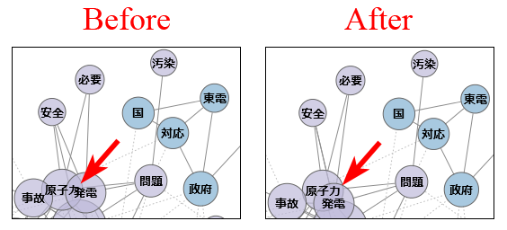
- 品詞体系の微修正
- これまでは半角の記号や数字類が、分析対象の「語」として抽出される場合があった。この点を修正して、そうした語は「その他」品詞に分類し、分析対象外となるようにした。具体的には、茶筌が「未知語」と判定した語の中で、アルファベットも全角文字も含まないような語は、「その他」品詞に分類するよう修正した。（MeCabを使用する場合は、MeCabの辞書側で未知語処理を設定しないと、あいかわらず1文字の半角記号が分析対象の「語」として抽出される場合あり）
- 細部の調整
- 文書のクラスター分析を行う際、2.b.30e以降では、文書数が300を超える場合はデンドログラムを描画しないようにしていた。この制限の閾値を300から500に変更した。
- 「コーディング」「クロス集計」コマンドおよび、このコマンドで作成するヒートマップ・バブルプロットでは、変数の値そのものの順で並べ替えを行っていた。値のラベルがある場合でも、並べ替えには用いていなかった。この点を改めて、値ラベルがある場合には、そのラベルを用いて並べ替えを行うようにした。この修正によって、いちいち外部変数の読み込みをやり直さなくても、「外部変数と見出し」「リスト」画面で値ラベルを指定するだけで、順番を変更できるようになった。「1. ○○」「2. △△」のように、番号をラベルの先頭に付すことで、任意の順番に並べ替えられる。
- Windows版に同梱しているRのCairoパッケージを1.5-5に更新した。これによって、一部のWindows環境ではプロット内の文字にアンチエイリアスがかかっていなかった（プロット内の文字があからさまにギザギザに見えていた）問題を改善した。
- バグの修正
- コーディングルールで文字数（lc）による指定を行う際、マニュアルには「全角換算の文字数で指定」と記載していたが、実際には半角換算でこれまでは処理していた。今回プログラム側を修正して、マニュアル通り全角換算としたので、全角1文字で「1」、半角1文字で「0.5」の扱いとなる。※なお、将来的にはUnicode対応の際に、全角でも半角でも1文字は「1」文字という扱いになる可能性がある。
[2014 01/24]
2.b.30fでの変更点
- 細かな調整
- 自己組織化マップ（グレースケール）の線の色を、印刷時のことを考慮して、少し濃いグレーに変更した。
- バグの修正
- 「語－外部変数・見出し」の共起ネットワークを作成した後に「調整」を行うと、不正な結果が表示されるバグを修正した。
- 対応分析で、見出し・文書番号・変数の値などを同時布置する場合、これらの数が100を超える場合は、ラベルとラベルが重ならないように調整する処理（の2段階目）をスキップするようにした。極端にラベルの数が多い場合には、ラベル調整処理に延々と時間がかかって終わらない場合があったため。
[2013 11/28]
2.b.30eでの変更点
- バグの修正
- 「関連語検索」の結果を使った共起ネットワーク作成がエラーになるバグを修正した。
- 文書のクラスター分析に失敗する場合があるバグを修正した。
- KH Coderをインストール（展開）したディスクのフォーマット形式がFAT32の場合、Rによる計算結果を所得・表示的ない問題を修正した。
[2013 10/29]
2.b.30dでの変更点
- 共起ネットワークをグレースケールで印刷する時向けに、中心性やグループ分けをグレーの濃さで表現するオプションを追加した。
※グループ分けについては色だけでは見分けにくく、まだ改良の余地が大きい。それでも、点線でつながっているか（別グループ）実線でつながっているか（同じグループ）を確認することで、なんとか見分けられる場合が多い。
- バグの修正
- コーディング結果を使った階層的クラスター分析や多次元尺度法で、ユークリッド距離・コサイン係数を選択するとエラーになるバグを修正した。
- マップや折れ線グラフを開いた状態で、「コーディング」「クロス集計」を再度行うと、マップや折れ線グラフも更新される。この際に、コードの選択状況やコードの増減によっては、マップ・グラフの更新時に描画エラーが発生する場合があるというバグを修正した。
- Rを利用できない場合には、「コーディング」「クロス集計」画面で、マップや折れ線グラフの作成ボタンが無効になるようにした。従来はRが使えなくてもクリックできる状態にあり、クリックするとエラーになっていた。
- ヒートマップの列ラベルの向きを修正した。バブルプロットや折れ線グラフにあわせて、回転角を右90度とした。従来は270度だった。
- 多変量解析の結果をプロットする際、語の数が300以上になる場合は、語と語が重ならないように調整する処理（の2段階目）をスキップするようにした。極端に語の数が多い場合には、調整処理に延々と時間がかかって終わらない場合があったため。
- 多次元尺度構成法のプロットにおいて、軸ラベルの表示が不正確になる場合がある問題を修正した。本来は「次元1」と表示すべきところ、「次元2」と表示している場合があった。
[2013 10/05]
2.b.30cでの変更点
- 「コーディング」「クロス集計」コマンドを新設
- コーディング結果の「章・節・段落ごとの集計」および「外部変数とのクロス集計」コマンドの2つを、この「クロス集計」コマンド・画面に統合した。
- 「クロス集計」の結果を3種類のグラフで表現することで、データ中のどの部分でコードが多く出現しているのかを示せるようになった。この部分は、長い間「Excelでグラフを作って下さい」という形になっていたが、やはり少し不便だった。特にいろいろな分析を試して結果を見たい場合には、KH Coder上ですぐにグラフを見られる方が便利なので、これらの作図機能を準備した。
| 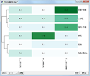 |
|
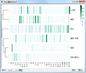 |
|
|
|
ヒートマップ
（分割数小）
|
|
ヒートマップ
（分割数大）
|
|
折れ線グラフ
|
|
|
|
|
|
|
|
|
|
|
|
|
バブルプロット
（分割数小・カラー）
|
|
バブルプロット
（分割数大・グレー）
|
|
|
- 細部の調整
- 多変量解析の「調整」完了時には、「調整」ボタンをクリックした時に表示していた種類・カラーのプロットを開くように改善した。
- 従来は「調整」Windowを開いている時に、元のWindowsを閉じると、「調整」Windowだけが残っていた。これが紛らわしい挙動を引き起こす場合があったので、元のWindowを閉じると、「調整」Windowも同時に閉じる仕様とした。
- バグの修正
- コーディング結果を使った自己組織化マップ作成がエラーとなるバグを修正した。
- エラーメッセージが部分的に文字化けする場合がある問題を修正した。
[2013 08/06]
2.b.30bでの変更点
- MeCabを使って文章から語を切り出す際に、Unicode（UTF8）の辞書も使用できるようにした。
[2013 06/23]
2.b.30aでの変更点
- バグの修正
- 特定のWindows環境では、Rを用いた解析ができなかったり、抽出語リストが自動的に開かなかったりする場合がある問題を修正した。
- 「部分テキストの取り出し」コマンドのバグを修正した。データ中にH1～H5のタグがあって、なおかつ「より上位の見出しを新規テキストファイルに含める」のチェックを外し、さらにコーディング結果が一定の条件を満たすと、本来は存在するはずの改行がなくなってしまうバグがあったので修正した。
- コーディングルールで、「"<>見出し1-->chapter 1"」のような、半角スペースを含む変数指定が機能しなくなっていた問題を修正した。なお、こうした指定の際には、例示のようにダブルクォートで括る必要がある。このバグはバージョン2.ｂ.30で混入していた。
[2013 05/08]
2.b.30での変更点
- 半透明の色を使ったプロット
- 対応分析・多次元尺度構成法・共起ネットワークなどのプロットに、半透明色を使って描画を行うオプションを追加した。ただし、EMF・EPS形式では半透明の色は保存できない。
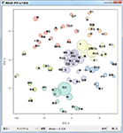 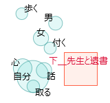 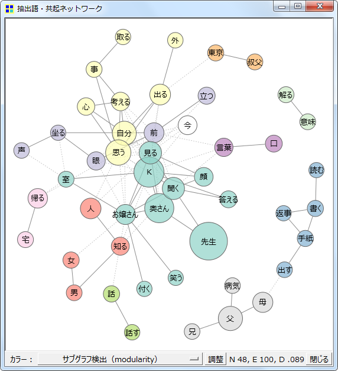
- 文書のクラスター分析コマンドを拡充
- デンドログラムを表示できるようにした
- データ標準化の有無・種類を選択できるようにした
- IDF値を使って、少ない数の文書にしか出現しない語を重視するかどうかを選択できるようにした。
- 「形態素解析の結果を再読み込み」コマンドをプラグインとして追加
- 茶筌やMeCabによる形態素解析の結果を修正したい場合には、特定の文字列を1つの語として「強制抽出」する機能を利用すると良いだろう。しかし、それよりもより柔軟に手作業で形態素解析の結果を修正したい場合もあるかもしれない。そうした場合には、形態素解析の結果を格納したファイル（coder_data\[分析対象ファイル名]_ch.txt）を修正し、メニューから「ツール」「プラグイン」「入出力」「形態素解析の結果を再読み込み」とたどって、このコマンドを実行すればよい。
- 細部の調整
- 多変量解析における距離計算の修正
- ユークリッド距離やコサイン係数を使う場合、語の出現回数そのもの（粗頻度）ではなく、1000語あたりの出現回数（調整頻度）を計算に使うように修正した。影響を受けるのは、階層的クラスター分析・多次元尺度構成法・文書のクラスター分析で、ユークリッド距離・コサイン係数を使用する場合。また自己組織化マップもユークリッド距離固定なので影響を受ける。
- コーディング機能の修正
- これまでは語としての「and」「or」「not」をコーディングの条件として指定することができなかった。これらについては、"and" "or" "not"のように記述すれば、条件として利用できるようにした。
- これまではシングルクオートで括って文字列指定を行う際に、スペースを含む文字列を指定することができなかった問題を修正した。なお、文字列としてシングルクオートを指定したい場合には、「''」のように2重に記述する必要がある。
- igraph 0.6（Rパッケージ）の仕様変更に対応
- Windowsに64bit版のRをインストールして使用する場合や、Linux・Mac OS XにRをインストールする場合、従来はわざわざ古いバージョンのigraph 0.5.xを入手する必要があった。この点を改善し、最新版のigraphパッケージにも対応した。
- バグ修正
- 英語データを分析する際に語の強制抽出を行うと、強制抽出する語があった箇所で文が区切られてしまうバグを修正した。
- 「関連語検索」「文書検索」画面で、「and」や「or」といった語を入力して検索した場合にエラーとなるバグを修正した。
- 一部のエラーメッセージが正常に表示されない問題を修正した。
[2013 03/27]
2.b.29gでの変更点
- 細部の調整
- 「強制抽出する語」「使用しない語」の指定について、従来の画面への入力だけでなく、指定ファイルからの読み込みを行えるようにした
- ベイズ学習の際の画面遷移を変更した
- 起動中（特定のプロジェクトを開いている間）は多変量解析画面のオプションが保存されるが、1つの多変量解析画面で抽出語選択の条件を変更した場合には、その変更が他の画面にも反映されるようにした。
- バグ修正
- コーディング結果を用いた多変量解析の画面を1度開くと、その後にルールファイルを更新しても、表示内容が更新されない問題を修正
- 「ベイズ学習による分類」→「外部変数から学習」画面で、外部変数を選択していなくても「チェック」をクリックできてしまい、結果としてエラーが発生する問題を修正
[2012 12/12]
2.b.29eでの変更点
- 共起ネットワークへの機能追加
- ランダムウォークによってサブグラフ検出を行う機能を追加した。
- プロットのラベル配置を改善（対応分析・多次元尺度構成法・自己組織化マップ）
- ラベルが途切れたり、ラベル同士が重なったりするケースが減るよう修正した。
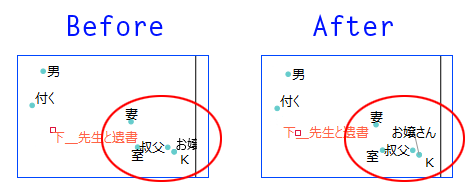
- バグの修正
- コーディングルールの条件記述部分を誤ってコード名と認識してしまう場合がある問題を修正した。
- 「使用しない語の指定」が（強制抽出したタグ品詞の語については）反映されない場合がある問題を修正した。
- Rを用いた多変量解析がエラーになる場合があるバグを修正した。
- Linux / Mac上ではテンキーの「Enter」キーで検索・解析を実行できなかった問題を修正した。
[2012 09/23]
2.b.29cでの変更点
- 細部の調整
- 自己組織化マップで、クラスター数として10以上の値を指定した場合の色使いを変更した。また9以下の場合についても微調整を加えた。
- 1つのプロジェクトを開いている間は、多変量解析のオプションをすべて記憶するようにした。ただし前処理や、外部変数の読み込み・削除を行うとリセットされる。
- Windowの挙動を修正した。従来はメニューから呼び出しても、Windowが前面に出てこないことがあったが、常に前面に出るようにした。
- バグの修正
- 分析対象ファイルのフルパス（ファイル名・フォルダ名）に日本語文字列が含まれていると、自己組織化マップ作成時にエラーとなる問題を修正した。
- Windows 7上でATOK 2012を使用していると、入力欄に見えない文字（\r）が入力されることがあるため、（1）多変量解析の「調整」がエラーになる場合がある問題を修正した。また、同じ理由で（2）「強制抽出する語の指定」と「使用しない語の指定」に失敗する場合がある問題を修正した。
- Linux上ではAltキーでメニューを操作できなかったバグを修正した。
[2012 08/28]
2.b.29bでの変更点
- 抽出語・コードの自己組織化マップを作成する機能を実験的に追加した。
- デフォルトの設定内容では、マップ作成（学習）に非常に長い時間がかかるので注意が必要。CPUがCore2のPCでは、70語 x 110文書で6分、70語 x 1200文書で90分程度。
- 英語データ分析時（Stanford POS Tagger使用時）でもTermExtractによる「複合語の検出」を行えるようにした。
- バグの修正
- 一部のWindows環境で起動しない場合がある問題を修正した。
- 「語の抽出結果を確認」画面で、検索する文字列中にシングルクォートが含まれているとエラーになる問題を修正した。
- エラーメッセージが正常に表示されない場合がある問題を修正した。
[2012 08/25]
2.b.29での変更点
- クラスター分析の結果（デンドログラム）に、抽出語・コードの出現回数をあらわす小さな棒グラフを添えて表示するようにした。
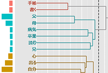
- 文書のクラスター分析コマンドを修正した
- クラスター化法としてCLARA: Clustering LARge Applicationを選択できるようにした。CLARAでは文書数が比較的多い場合でも分析を行える。32bit Windows上で10万文書 x 300語の分析が可能なことを確認。ただし、データサイズがあまりに大きくなると、クラスター分析以前にR上でのデータ整理ができなくなる。よって32bit Windows上では、文書数が10万程度になる場合、語数を300程度に抑える必要がある。
- CLARA以外の手法においても、必要なメモリ容量が若干減少した。32bit Windows上で、8000文書 x 3000語程度の分析（Ward法）が可能なことを確認。
- 細部の調整
- プロットをSVG形式で保存できるようになった。
- 多変量解析の結果を表示するWindowのサイズと位置を記憶するようにした。
- 制限を超える長さの語があった場合、従来はエラーメッセージを表示して、前処理を中断していた。この挙動を変更し、「短縮して認識する」旨の警告メッセージを表示した上で、前処理を続行するようにした。
- バグの修正
- [Windows環境のみ] デスクトップの外に出てしまったWindowを、自動的にデスクトップ内に戻すようにした。マルチ・ディスプレイ環境で起動した際にWindow位置をKH Coderが記憶し、そのままシングル・ディスプレイに移行した場合には、Windowがデスクトップ外に出てしまうことがあった。そこで、この事象が発生する場合には、記憶したWindows位置を「忘れる」ようにした。
- Interface Languageを英語にしても、一部のエラーメッセージが日本語で表示される問題を修正。
- 「コーディング」→「対応分析」のプロットが文字化けする場合があるバグを修正した。
- Rを用いた多変量解析がエラーになる場合があるバグを修正した。
[2012 07/22]
2.b.28bでの変更点
- Rを用いた多変量解析の実行速度を改善した
- 論文タイトルやTwitterのようにつ1つ1つの文書が短い場合には、10万件程度の文書を分析する場合でも、3分程度で共起ネットワークを作成できるようになった。1つの文書が新聞記事程度の長さになると15分程度必要。共起ネットワークだけでなく、クラスター分析・対応分析・MDSの場合も同様。ただしこれらの処理時間は、前処理を終えた状態で共起ネットワーク等のコマンドを実行した場合のもので、前処理に別途処理時間が必要。
- 従来は少なくとも2～3時間以上かかっていたはずなので、データサイズが大きい場合には体感できるレヴェルの改善が見込まれる。これまでは分析する文書数を、（サンプリング等の方法で）1万件以下に抑えることを推奨していたが、このバージョン以降なら10万件程度までは分析できるだろう。ただし1万件程度に抑えた方が、分析の待ち時間が短く、快適なことは確か。
- バグの修正
- 共起ネットワーク作成時に「強い共起関係ほど太い線で描画」にチェックを入れると、実行時にエラーが表示され結果が出ないバグを修正。
- 集計表をクリップボードにコピーする際、コピーした内容が文字化けしている場合がある問題を修正。
- 変数リスト画面で日本語の変数名が文字化けする不具合を修正。
- Windows 7上でATOK 2012を入力に使用すると、入力欄に見えない文字（\r）が入力され、結果として検索が上手くいかない場合がある問題を修正。
[2012 03/12]
2.b.28での変更点
- プロット機能の拡充
- プロットにアンチエイリアスがかかるようになった
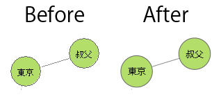
- プロットを従来のEMF・EPS・PNG・R形式に加えて、PDF形式でも保存できるようになった
- 多次元尺度法コマンドに「クラスター化と色分け」オプションを追加
- 50から100といった多くの語（コード）を用いて分析を行うと、プロットの解釈が難しくなる場合がある。そこで解釈の参考のために、クラスター化を行い、その結果を色分けによって示す機能を追加した。
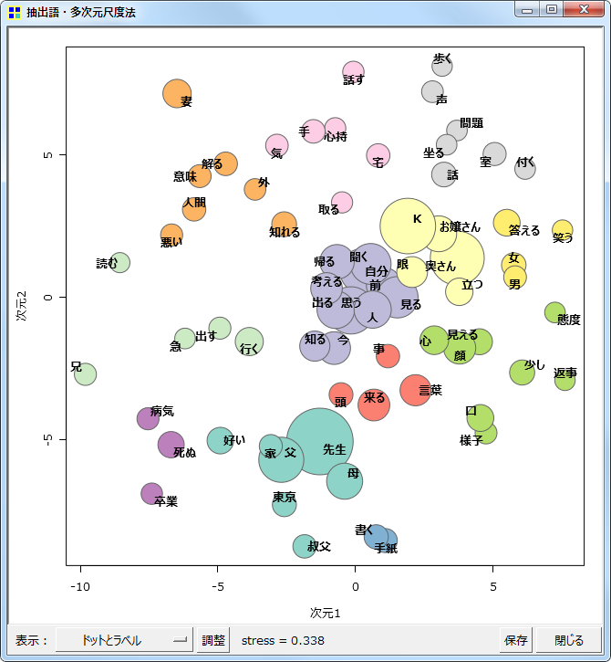 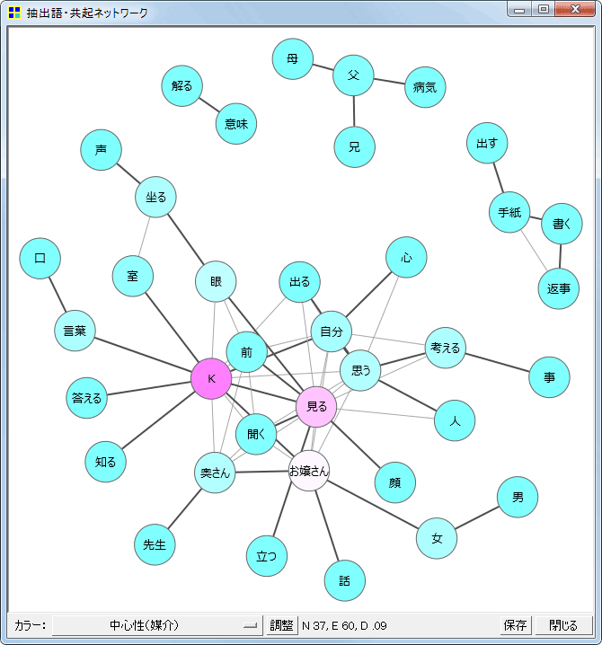
- 共起ネットワークコマンドに「最小スパニングツリーを表示」するオプションを追加
- 語と語を結ぶ線（edge）が多くなった場合には、どのedgeが重要かを示す手がかりがあった方がプロットを解釈しやすい場合がある。そこで解釈の参考のために、最小スパニングツリーの一部かどうかという観点から、重要とみられるedgeを選び、強調する（色の濃い太線で示す）機能を追加した。具体的には、Primの方法で共起の強さを考慮した最小スパニングツリーをもとめ、この最小スパニングツリーを構成するedgeをすべて強調している。
- 「部分テキストの取り出し」コマンドを拡充
- 特定のコードが与えられた文書だけを取り出す際に、外部変数の値も同時に取り出すようにした。外部変数の値は別途CSVファイルに保存される。取り出した文書データをKH Coderに登録して分析する際には、このCSVファイルから外部変数を読み込むことができる。
- メニューやボタン等のインターフェイスを英語で表示できるようになった
- コーディング機能に国際化のための変更を加えた
- コード名をあらわす「＊」を半角で入力しても良いようにした
- 「見出し」という記述を「heading」と書いても良いようにした
- 細部の調整
- 「コーディング→対応分析」のオプション画面を整理して、「抽出語→対応分析」の画面とほぼ同じ形にした
- プラグインのサンプルに「Rコマンドの実行」を追加
- バグの修正
- Rを用いた多変量解析の実行時に、エラーが表示されて結果が出ない場合があるバグを修正した。
[2012 02/29]
2.b.27での変更点
- 英語データの分析に実験的に対応
- 活用のある語の基本形・語幹の取り出しには、「Stanford POS Tagger」を使ったLemmatizationか、「Snowball Stemmer」を使ったStemmingのいずれかを選択できる。ただし「Stanford POS Tagger」は部分的にしか同梱していないので、モデル（辞書）を変更したい場合などは別途入手が必要。
- Stemmingとは単純な規則にしたがって語尾をカットする処理である。よって「says」や「saying」については「say」という基本形に直して抽出できるが、「said」の場合はそのまま「said」として取り出す。それに対してLemmatizationでは、「said」も基本形の「say」に直して取り出すことができる。
- Stemmingを利用する場合は、品詞による語の分類は行わない。名詞の「thinking」も、動詞の現在分詞の「thinking」も、同じ基本形「think」に縮約されて同じ語として抽出される。それに対してLemmatizationの場合には、名詞の「thinking」と動詞の「think」とを区別して抽出することが試みられる。
- 英語データへの対応はこれが最初の試みなので、バグが残っているかもしれない。もし不具合に気がつかれた折には、ご報告いただけると大変ありがたい。
- 英語以外のいくつかの西ヨーロッパ言語にも実験的に対応
- オランダ語、フランス語、ドイツ語、イタリア語、ポルトガル語、スペイン語データの分析に実験的に対応。
- これらの言語の場合は、語の基本形（語幹）を取り出すために同梱の「Snowball Stemmer」を使用する。
- アクセント付きアルファベットのような非ASCII文字列がデータに含まれる場合、分析対象ファイルの文字コードはLatin1（ISO 8859-1）とする必要がある。
- アクセントのついたアルファベットのような非ASCII文字列がデータに含まれる場合、アクセント等を削除したASCII文字に変換してKH Coderは認識する。ただし「Snowball Stemmer」による処理は、アクセント等がついたまま行っており、「Snowball Stemmer」の出力をASCII文字に変換している。ASCII文字への変換にはText::Unidecodeモジュールを使用しており、この変換の結果として語がまるごと空白になってしまった場合は、「???」という語としてKH Coderは認識する。
- これらの言語への対応は極めて実験的な段階にある。これらの言語のテキストを扱う際には、KH Coderのテストを行うようなつもりで慎重に分析していただきたい。また不具合などがあればご報告いただけると大変ありがたい。
- 「共起ネットワーク」コマンドの拡充
- 「カラー」の選択肢に、「中心性（固有ベクトル）」を追加した。
- 「階層的クラスター分析」コマンドの拡充
- コーディング機能の拡充
- 語を使ったコーディングの際に、従来の品詞や活用形の指定に加えて、表層形を指定できるようにした。英語等の分析時にStemmingを用いた場合は、活用形の名称が出力・認識されないため、活用形による指定ができない。そこで、活用形その代わりに表層形で指定を行えるようにした。
- なおKH Coderでは全般に大文字と小文字を区別していないので、基本形の指定では大文字で指定しても小文字で指定しても同じ検索結果が得られる。ただし、この表層形の指定箇所では特別に大文字と小文字を区別するようにした。基本形だけではなく、表層形まで指定する場合には、大文字と小文字の違いといった詳細な識別を行いたいケースがありうると考えたためである。
- チュートリアルの修正
- 英語データを分析するための手順を追加した。ただしメインのPDF（khcoder-tutorial.pdf）内ではなく、チュートリアル用データに「英語データ分析」というフォルダを追加し、その中にサンプル・ファイルとReadmeを置いた。
- バグ修正
- 語の活用形を正しく認識・集計できない場合がある問題を修正した。例えば「生じる」という語は、連用形も「生じ」であり未然形も「生じ」である。従来はこうした活用形を正しく識別できず、「抽出語検索」画面ではどちらか片方の活用形名だけ（「連用形」だけ）を表示しながら、出現数として両方の「生じ」を合計した数を示していたバグを修正した。
- 細部の調整
- 語の扱い方を修正した
- これまでは、(1)語の基本形が同じで、なおかつ(2)KH Coder上の品詞名が同じであっても、(3)茶筌が異なる品詞名を与えていれば、別々の語として扱っていた。この点を変更し、(1)と(2)が満たされてさえいれば、たとえ(3)茶筌・Mecab等の品詞名が異なっていても、同一の語として扱うように変更した。
- この変更にともなって、「その他」品詞の扱いをやや修正した。従来は「その他」品詞を集計に使用する際、語の基本形の後にカッコ書きで茶筌・Mecab等が出力した品詞名を添えていたが、これを廃止した。上記の語の扱い方の修正によって、茶筌・Mecab等の品詞名による語の識別を行わず、同じ語と見なすようになったことによる修正。
- この変更に伴ってMySQLデーターベースの構造を若干変更した。これまではgenkei（基本形）テーブルとhinshi（茶筌・Mecab等の品詞）テーブルを結合する形になっていたのを改め、katuyo（活用形）テーブルとhinshiテーブルを結合する形にした。
- 以下の3つのPerlモジュールが64bit版のActivePerlでは見あたらなかったので、これらのモジュールが無くても動作するように手当てを行った。ただし以下に示すような機能の低下がある。
- Encode::EUCJPMSモジュールがない場合、Windowsの機種依存文字が文字化けする可能性が高くなる。
- Image::Magickモジュールがない場合、階層的クラスター分析の結果（デンドログラム）が通常の向きではなく、90度回転した向きに表示される場合がある。
- Win32::GUI::SplashScreenモジュールが無い場合、起動時のスプラッシュスクリーンが表示されない。
- 各機能の追加・拡充に応じてマニュアルを修正した。
[2011 11/26]
2.b.26での変更点
- バブルプロットの機能を追加
- 抽出語／コードの「対応分析」「多次元尺度構成法」コマンドでバブルプロットを作成できるようになった
- 共起ネットワークの機能を拡充
- 外部変数リストに見出しも表示するようにした
- リスト画面でのマウス操作によって、特定の見出しを持つ文書を検索したり、それらの文書に特徴的な語を検索できるようになった。外部変数の場合にはこうした検索が従来からマウス操作で可能であったが、見出しを使うには検索画面でのキー入力が必要で、やや不便であったのを改善した。
- チュートリアルの修正
- リスト画面からの見出しを用いた検索（上記の新機能）を利用するように、「3.2 それぞれの部に特徴的な言葉」の操作手順を変更
- 5節の最後にデータ準備についてのヒントを追加
- KH Coderで作成したプロットをR形式で保存し、R上で利用する例を追加した。ただしメインのPDF内ではなく、チュートリアル用データに「Rの利用例」というフォルダを追加し、その中にサンプル・ファイルとReadmeを置いた。
- Windows版パッケージの変更
- Windows 7上で比較的大きいデータを扱った場合の安定性を向上させるために、添付のRをVer. 2.6からVer. 2.12に更新した。これにともなって（Rのigraphパッケージも更新せざるをえなかったので）、共起ネットワークにおける語の配置やサブグラフ検出の結果などが、以前のバージョンの出力とは異なる場合がある。
- 細部の修正
- GUIの調整：「関連語探索」「文書検索」「SQL文の実行」画面、リスト選択時のハイライトカラー等
- Excelファイルの出力時に、従来はすべての罫線を印刷する設定になっていたので、不要な罫線を印刷しない設定に修正した
- Windows上でRを用いた多変量解析を行った際、これまではプロットをbmp形式で作成・表示していたのをpng形式に変更
- バグ修正
- Rを用いた多変量解析に失敗し、エラーが表示されたり、エラー表示もなしに応答を停止する場合があるバグを修正。※失敗するケースは減っていると思うが、皆無になったかどうかは検証中
- Rを用いた多変量解析を繰り返した場合のメモリ消費量を改善した
- 「ツール」→「コーディング」→「対応分析」画面のバグを修正した。コーディング単位を変更しても、それにともなう外部変数や集計単位の表示変更に失敗していた問題を修正
- 「前処理」→「語の取捨選択」画面で行った品詞選択が、前処理の実行時にリセットされる（デフォルト値に戻る）バグを修正した
- Mac上に新しいR（2.13.0で確認）がインストールされている場合、Rを用いた解析がエラーになる問題を修正
[2011 08/29]
2.b.25aでの変更点
- バグの修正
- 「関連語探索」コマンドからの共起ネットワーク作成に失敗する場合があるバグを修正。例えば「父」と関連が強い語のネットワークを作成するといった操作がエラーになる場合があった。
- ひとまずエラーは回避したものの現在の仕様では、例えば「父」と関連が強い語のネットワークを作成するという場合には、「父」が出現している文書のみを使って共起の強弱を計算している。したがって、「父」がわずかな数（例えば10～20程度）の文書にしか出現していない場合、すなわち注目する語がわずかな数の文書にしか出現していない場合は、あまりうまく共起ネットワークを作成できない。共起ネットワーク内に「父」（もしくは注目する語）が表示されない場合もある。目下のところ、このような場合には共起ネットワークを作成するよりも、KWICコンコーダンスを参照されると良いだろう。
[2011 05/25]
2.b.25での変更点
- 抽出語／コードの「対応分析」コマンドを拡充
- 多重対応分析の機能を追加した。外部変数を用いて対応分析を行う際に、従来は1つしか外部変数を選択することができなかったが、複数の変数を選択できるようにした。複数の変数を選択した場合、自動的に多重対応分析が実行される。多重対応分析では複数の変数を同じ分析の中に含めることで、抽出語とそれぞれの変数との関連を同時的に探索したり、それを通じて、各変数間の関連を探索したりすることができる。
- 「差異が顕著な語を分析に使用」するオプションを追加した。このオプションを使えば、文書ごとに見て、あるいは変数の値ごとに見て、出現数の差異が大きい語だけを分析に使用することができる。どの文書にでも、あるいは変数のどの値であっても満遍なく出現しているような語からは、それぞれの文書／値の特徴を読み取ることができない。そうした語を、このオプションによって分析から省くことができる。なお、出現数の差異の「顕著さ」はカイ二乗値で測定している。
- 「原点から離れた語のみラベル表示」するオプションを追加した。このオプションを有効にすると、対応分析の結果を示す際に、原点から距離のある語のみにラベルを表示する。原点付近には特徴の薄い語が密集する場合が多いので、このオプションを用いて、原点から離れた語、すなわち何らかの特徴がある語だけにラベルを表示した方が結果を確認しやすい場合もあるだろう。あるいは、多数の語を分析に用いると、出力される図が語のラベルで真っ黒に埋まってしまう。そうした場合には、このオプションによって一部の特徴的な語のみラベル表示することで、結果を視認できるようになるだろう。なお、従来の「特徴的な語に注目」オプションは廃止した。従来の「特徴的な語に注目」オプションは、このオプションと同様の処理によって「特徴的な語」を選択していた。
- 抽出語のラベルを表示せずに、変数または文書番号のラベルだけを表示するオプションを追加した。数百といった多数の語を分析に利用する場合には、語のラベルを表示すると画面が黒く埋まってしまうので、この機能を利用すると良いだろう。
- 抽出したすべての成分の固有値・寄与率をコンソール画面にテキスト出力するようにした
- 「関連語探索」コマンドを拡充した
- 特定の語やコードに注目して、関連が強い語をリストアップするのが、「関連語探索」コマンドの従来の機能であった。それに加えて、リストアップした語の共起ネットワークを描画する機能を追加した。これによって、例えば「父」と関連が強い語のネットワークを作成するといったことが可能になった。
- 抽出語／コードの「共起ネットワーク」コマンドを拡充
- 抽出語／コードの「多次元尺度構成法」コマンドを拡充
- 収束するまでの過程をコンソール画面にテキスト出力するようにした。
- 多変量解析に用いる語を選択する際のデフォルト（既定値）を変更した
- 従来はすべての品詞を選択するのが分析画面のデフォルトであったが、否定助動詞や形容詞（非自立）、ひらがなだけからなる語は選択しない設定をデフォルトとした。これにともなって、コロケーション統計や関連語探索では、フィルター設定画面を開かなくても、自動的に否定助動詞などが省かれるようになっている。
- また分析に用いる語の数が75前後になるような、切りの良い数値（5の倍数）が、「最小出現数」のデフォルトとして入力されるようになった。
- 従来のChaSenに加えてMeCab（IPADIC）にも対応した
- 「プロジェクト」→「設定」画面でChaSenとMeCabを切り替えられるようにした。ただしMeCabはWindows版パッケージに同梱していないので別途インストールする必要がある。Windows上のKH Coderは、mecab.exeから見て「..\etc」フォルダにあるmecabrcを設定ファイルとして常に利用する。したがって必ずしもMeCabの「インストール」を行っていなくても、mecab.exeやmecabrcをはじめとするファイル群が整っていればMeCabを使用できる。
- なおMeCabを使用する場合には、分析対象ファイルのフルパス（ファイル名・フォルダ名）に全角文字を用いてはいけない。
- またChaSen・MeCabを問わず、IPADIC以外の辞書を使う場合は、KH Coderの品詞設定を辞書に応じて修正する必要がある。
- 品詞体系の仕様を変更した
- KH Coderでは例えば、助詞や助動詞を「その他」扱いせずに、分析対象として取り出すといった、品詞体系の変更が可能である。ただし従来は設定ファイルを変更しても、それ以後に作成したプロジェクトか、プラグインによる「品詞設定の読み込み」を行ったプロジェクトにしか、設定変更が反映されなかった。したがって、プロジェクトごとに異なる品詞体系を保持させることができた。
- この仕様を変更して、設定ファイルの内容がすべてのプロジェクトに即座に適用されるように変更した。正確には、それぞれのプロジェクトで前処理を実行した時点で、そのプロジェクトに新しい設定が適用される。このため、プロジェクトごとに異なる品詞体系を保持させることはできなくなった。
- 細部の調整
- 共起ネットワークでカラー「なし」を選んだ場合の線の色を変更した。白黒印刷を想定して、従来の薄めのグレーから、比較的濃いグレーに変更。
- 抽出語の多変量解析コマンドで、いちいち「時間のかかる処理を実行してよいか」というダイアログを出さないようにした。
- バグの修正
- 「SQL文の実行」画面で、列の名前に含まれる全角文字が文字化けしていたバグを修正。「SELECT "テスト" as 列名」を実行した際の出力で、従来は「列名」部分が文字化けしていたのを、正常に表示できるようにした。
- 外部変数の値に長い文字列が入っていると、SQLエラーが発生する場合がある問題を修正。
- コードを用いた多変量解析で、「実行時にこの画面を閉じない」オプションを有効にして解析を繰り返した場合、「コーディング単位」の変更が結果に反映されない場合があるバグを修正。
- 「語の取捨選択」で「強制抽出する語」として指定した語が、強制抽出されない場合があるバグを修正。指定した語の群と、分析対象データ本文における文字の並び順との組合せによって、稀にこの問題が発生していた。
- 抽出語リストの作成時に、デフォルトのXLS形式ではなくCSV形式を選ぶと、リストが作成できなくなる問題を修正。
- Windowsの言語設定が日本語以外になっている場合、またはWindowsでPerl/Tk 804.029を使用した場合にメニューが文字化けする問題を修正。
- MySQL 5.5以降を使用すると前処理がエラーになる問題を修正。
- 2.b.23以降ではWindows 9x上での前処理が失敗するようになっていたのを修正。
[2010 05/24]
2.b.24での変更点
- 「抽出語リスト」コマンドにオプションを追加
- 従来の「出現回数（Term Frequency）」だけでなく、いくつの文書にそれぞれの語が出現したのかをあらわす「文書数（Document Frequency）」の一覧表を作成できるようにした。
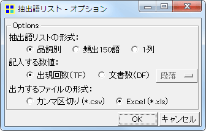
- 「頻出150語」や「1列」の表をKH Coderで作成する機能を追加。Excelアドイン（VBAマクロ）への依存から脱却することで、Mac・Linux環境でもこれらの表が容易に作成できるようになった。
- CSV形式だけでなくExcel形式（*.xla）でも表を出力できるようにした。
一部の環境では、CSV形式の表を開く際には文字コードを確認・指定する必要があったり、文字化けすることがある。こうした場合はExcel形式のファイルを出力する方が便利であろう。また、罫線や「ウィンドウ枠の固定」を設定できる点でも、Excel形式のファイルはいくぶん利便性が高い。
- 文書のクラスター分析のコマンドを拡充・変更した。
- 文書間の距離を計算するためのオプションとしてコサイン係数を追加。
- 距離計算にコサイン係数やユークリッド距離を使用する場合、tf・idf値を利用するように変更した。以前のバージョンでは純然たる語の出現数（tf）を利用していた。それに対して、idf値を使うことで、比較的少ない数の文書にしか出現しない語が、これまでよりも分析結果に大きく寄与するようにした。
- 距離計算にユークリッド距離を使用する場合は、文書ごとの標準化を行うように変更。
文書のサイズ差による分類になりにくいように、標準化を行ってから距離計算を行うようにした。
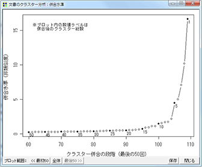
- クラスターの併合過程を表示・プロットする機能を追加。クラスター数を決定する際の参考にしたり、特に似通っている文書のペアや、クラスターのペアを検索するために利用できるだろう
。
- 一部の文書を分析から除外するように変更。クラスター分析に使用する語が1種類たりとも含まれていない文書については、類似度の計算が不正確になる場合があるので、分析から除外して「分類不可」とするように変更した。
- 使用メモリについては、文書数が5000程度、分析に使う語が5000程度の場合、おおむね1G Bytesほどの空きメモリがあれば分析を実行できるようだ。32bit版のRをバックエンドとして利用していることもあって、このコマンドで大規模データの分析を行うことは難しい。データが大きい場合には、「文書 x 抽出語」表をいったんファイルに出力し、大規模データを扱える統計ソフトウェアで当該ファイルを分析すると良いだろう。
- 抽出語／コードのクラスター分析のコマンドを拡充。
- 抽出語／コード間の距離を計算するためのオプションとしてコサイン係数を追加
- クラスターの併合過程をプロットする機能を追加。クラスター数を決定する際の参考にしたり、併合過程を詳細に検討したりするために利用できるだろう。
- 抽出語／コードの対応分析コマンドを拡充。
- 「特徴的な語／コードに注目」するオプションを追加した。
対応分析では、これといった特徴のない語／コードが原点付近に密集しがちである。そうした語／コードを分析から除外するためのオプションを追加した。このオプションを有効にすると、いったん対応分析と布置を行って、原点から離れた位置の語／コードほど「特徴的」と見なす処理を行う。その上で、比較的「特徴的」な語だけを対象として再度対応分析を実行し、その結果を画面に表示する。
- 抽出語／コードの多次元尺度構成法（MDS）コマンドを拡充。
- 距離計算のオプションとしてコサイン係数を利用できるようになった
。
- 細部の調整／バグの修正
- 文字化け自動修正の際に、制御文字をスペースに変更するようにした。従前は半角アンダーバーに変換していた。
- 設定画面で「前処理効率化のためにデータをRAMに読み出す」というチェックを外さないと、前処理が失敗する場合があったバグを修正。
- 一部のエラーメッセージが文字化けするバグを修正。
- KWICコンコーダンスの抽出語入力欄にExcelからコピー&ペーストを行った場合、検索に失敗する場合がある問題を修正。Excelのセルごとコピーして貼り付けた場合、文字列の末尾に改行文字が付与される。この改行文字を削除して検索を行うように修正した。同様の問題は他の画面／他の入力欄でも生じるが、ひとまず影響が大きいと考えられる箇所、すなわちKWICコンコーダンスの抽出語入力欄のみ手当てを行った。
- Windows版パッケージの修正
- 同梱のRにamap・flashClustパッケージとTcl/Tkサポートファイルを追加。
- 同梱のMySQLの設定を変更し、Windowsのデフォルトの一時フォルダではなく、kh_coder.exeと同じドライブのフォルダ（dep\mysql\tmp）を、一時ファイルの保存に使うようにした。
- 現在のKH Coderは32bitアプリケーションなので、2GBまでしかメモリを使用できない。しかし、64bitシステム上では誤って2GB以上のメモリが使用できると判断してしまい、前処理が失敗する場合があった問題を修正。
[2010 11/11]
2.b.23での変更点
- 「共起ネットワーク」コマンドに以下のオプションを追加：
- 「強い共起関係ほど太い線で描画」
- 「出現数の多い語ほど大きい円で描画」＋「フォントも大きくする」
- バグの修正
- 「文書x抽出語」表をSPSS形式で出力する際には、SPSS上でデータを転置する（行と列を入れ替える）ためのシンタックスが同時に出力される。このシンタックスが最近のバージョンのSPSSでは正常に動作しないバグを修正。
- 対応分析でフォントサイズを指定しても、グレースケールのプロットには指定が反映されないバグを修正。
- 細部の調整
- 対応分析の実行を若干効率化した。
- プロジェクト用のDB作成時に「default character set ujis」オプションを付け加えた。これによって、MySQL Serverを自前でインストールして使用する場合、これまではMySQL Server側でdefault character setをujisに設定しなければならなかったが、この設定が不要になった。ただし、設定が不要になったのはMySQL 5以降を使用する場合のみ。
- 抽出語／コードの階層的クラスター分析におけるデフォルトのクラスター数を、抽出語数／コード数の平方根を四捨五入した値に変更
- プロジェクトの設定情報をMySQL内にも保存することで、万一、プロジェクト情報が消失した場合も（プロジェクトの一覧から利用していたプロジェクトが不意に消失した場合も）、復旧が比較的容易に行えるようにした。ただし、誤って削除の操作を行ってしまった場合は復旧できないので、強制抽出する語の設定などは要バックアップ。
- Time::Ctimeモジュールを使用しないように変更した。
[2010 06/05]
2.b.22での変更点
- ベイズ学習による文書分類の機能を追加
- 人間がいくつかの文書を分類して「見本」を示せば、そこから分類の基準を学習して、他の文書を自動的に分類する機能。学習にはナイーブベイズモデルを使用。
- この機能を使えば、コーディングルール作成とは違う形で、研究者の観点を分析に反映させることができる。漱石「こころ」のチュートリアルで扱っている「人の死」のような事柄／概念であれば、コーディングルールの作成も容易であろう。しかし、より多種類で広範な表現を含みうる事柄／概念になると、「これらの表現が文書中にあれば、事柄Aが出現していたと見なす」といったコーディングルールの作成が難しい場合も考えられる。そうした場合でも、十分な数の分類「見本」を示すことができれば、この機能によって自動分類を試みることができる。
- コーディングルールとはそもそも分類基準のことであるから、この機能は、「見本」をもとに「ある種のコーディングルール」（分類基準）を自動生成する機能と考えることもできる。この観点から見れば、コーディングルール同様、学習した分類基準の内容を確認できることや、その内容を第三者に明示できることが重要になる。そこで、学習した分類基準の内容が人間にとっても理解しやすいナイーブベイズモデルを採用するとともに、学習内容を閲覧・確認する機能も準備した。
- チュートリアルの末尾にコラムとして本機能の使用手順の説明を加えるとともに、マニュアルに詳細な説明を追加した。
- 外部変数をCSV形式で出力する機能を追加
- クラスター分析による文書分類の結果や、ベイズ学習による文書分類の結果を、KH Coderは外部変数として保存する。そこで、それらの結果を出力して他のソフトでも使えるように、この出力機能を準備した。
- バグ修正
- クリップボードから貼り付けたテキストが文字化けする場合があるバグを修正
- 茶筌の設定ファイルを無駄に頻繁に（しかも変更せずに）上書きする挙動を修正
[2009 09/16]
2.b.21での変更点
- プロジェクトの「インポート」「エクスポート」機能を追加
- これまでは、他のPCで同じデータの分析を行いたい場合、プロジェクトの新規作成・前処理・外部変数の読み込み・各種の指定といった一連の操作を再度行う必要があり、これらの操作がいくぶん煩雑であった。そこで、既存のプロジェクトまるごとエクスポートし、他のPCで動いているKH Coderへ取り込めるように、これらの機能を準備した。なお、これらの機能を用いれば、WindowsとMacintoshのような異なるOS間でも、プロジェクトのやり取りを行うことができる。
- 既存のプロジェクトの品詞設定を変更できるようになった
- これまではKH Coderの品詞設定を変更しても、既存のプロジェクトの品詞設定を変更することができなかった。そのため、いったんプロジェクトを削除して再度登録する必要があった。そこで、「ツール」「プラグイン」「品詞設定をプロジェクトに読み込む」コマンドを準備し、これを実行することで、既存のプロジェクトの品詞設定を変更できるようにした。なお、このコマンドを実行しない限り、既存のプロジェクトの品詞設定は変更されないので、KH Coderではプロジェクトごとに異なる品詞設定を使うことができる。
- バグ修正
- Rを用いた多変量解析でエラーが発生しても、エラーメッセージが表示されずに、直前に行った分析の結果がそのまま表示されてしまう場合があるバグを修正。
- Excel用アドインの「頻出150語の表を作成」コマンドが上手く動かない場合があるバグを修正。アドインのバージョン番号を1.03とした。
- Mac OS X上では濁点・半濁点を含むファイル名・フォルダ名を扱えなかった問題を修正。
- MySQL 5.x使用時に「前処理効率化のためにデータをRAMに読み出」した場合、必要以上に（MySQL 3.xの3倍程度）メモリを消費していた問題を修正。ただし、MySQLの仕様変更のために、無駄な消費を抑えても、1.5倍程度のメモリを消費してしまう模様。
[2009 05/29]
2.b.20での変更点
- Rを用いた多変量解析の実行時にエラー・メッセージが表示され、分析結果が表示されない場合があるバグを修正。多変量解析の中でも特に、文書の「クラスター分析」や「共起ネットワーク」コマンドが上手く動かないケースが多かった。
- 「共起ネットワーク」における「サブグラフ検出」のパラメーターを調整。
- 「語の取捨選択」画面の入力欄で、スクロールバーの表示／非表示の切り替えが上手くいかず(?)、KH Coderがフリーズする場合があるバグを修正。
[2009 02/27]
2.b.19での変更点
- 「実行時にこの画面を閉じない」というチェックボックスを、多変量解析のオプション画面に追加。条件を変えながら分析を繰り返すような場合には、これにチェックを入れておくと良いだろう。このチェックボックスを追加したのは抽出語・コードの対応分析、多次元尺度法、階層的クラスター分析、共起ネットワークのオプション画面。
- 「分析対象ファイルのチェック」コマンドで、1行（1段落）が全角4000字を越えている場合には警告を表示し、自動修正もできるように修正した。これまでは全角8000字を越えていないかどうかをチェックしていたが、4000字以内に抑える必要があることが判明したため。
- コマンド名の変更： 「共起ネットワークグラフ」→「共起ネットワーク」
- バグの修正
- Windows XPをシャットダウンする際にKH Coderが起動していると、「このプログラムを終了できません」というダイアログが表示されて、シャットダウンが中断してしまうバグを修正。このバグは2.beta.13以降のバージョンに混入していた。
- Windows Vistaで「SQL文の実行」画面の描画が上手くいっていなかった問題を修正。「離着陸」ギミックを廃止。
- Mac OS X上で一部の日本語ファイル名を扱えるように修正。ただし、依然として濁点・半濁点を含むファイル名・フォルダ名は扱えない。またMac OS Xを含めてUnix系システム上では、ロケールをja_JP.eucJPに設定したシェルからKH Coderを起動するのがおそらく無難。ロケール設定は、Rとのコマンドのやりとりや、全角文字を含むファイル名の扱いに影響する場合がある。
- エラーメッセージが一部文字化けしていた問題を修正
[2009 02/25]
2.b.18での変更点
- 抽出語またはコードの「共起ネットワークグラフ」を描画する機能を追加
- 外部変数のそれぞれの値ごとに、特徴的な語を「関連語探索」機能によって調べ、その結果を表にまとめる機能を追加。自動的に以下のような表（ExcelもしくはCSVファイル）を作成
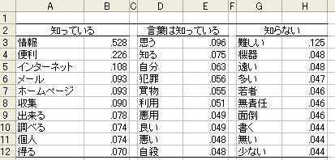
- 抽出語を用いた多変量解析コマンドや、「文書x抽出語」の出力コマンドで、抽出語の選択内容が保存されるようになった。ただし、各コマンドごとに別々の内容が保存されるのではなく、共通の設定として保存される。例えば、クラスター分析の際に設定した「最小出現数」や品詞の選択内容が、対応分析画面を開いた際にも自動的に読み込まれる。
- バグの修正
- Rを用いて作成したプロット（対応分析・クラスター分析・多次元尺度法・他）を保存すると、KH Coder上での画面表示よりも、周囲の余白が多めになる問題を修正
- クラスター分析の結果（デンドログラム）をEMF・EPS形式で保存すると、常に正方形の画像ファイルが作成されるために、図の縦横比がおかしくなるという問題を修正
- 「抽出語リスト」コマンドによるCSVファイル出力先を固定ファイルから、一時ファイルに変更した（「ファイルを開けない」エラー防止のため）
[2008 12/08]
2.beta17での変更点
- 2.b.16に混入したバグの修正
- 抽出語またはコードの「対応分析」コマンド実行時に、デバッグ用の内容を「C:\temp.txt」というファイルに書き出してしまうバグを修正。このバグのために、「C:\temp.txt」というファイルを作成する権限が無い場合、エラーが表示されて「対応分析」コマンドが実行できなかった。
[2008 10/12]
2.beta.16での変更点
- Rを用いて多変量解析を行う機能を追加した。抽出語またはコードを対象としての多次元尺度法・階層的クラスター分析・対応分析、また、文書の分類を行うクラスター分析を行えるようになった。
- Rを用いて作成したプロットやグラフを保存できるできようになった。保存形式はEMF、EPS、PNG、およびR用コマンドの4種類。ただし、EMF形式についてはWindowsでのみ利用可能。
- コマンド名の変更
- 「文書」→「抽出語 連関規則」から、「抽出語」→「関連語探索」に
- 「コード間関連」から、「類似度行列」に
- 「コンコーダンス（KWIC）」から、「KWICコンコーダンス」に
- 「関連語探索」コマンドのデフォルトのソート順を「確立差」から「Jaccard」に変更した
- 外部変数の詳細画面で値を選ぶと、そこから、当該の値が与えられた文書の一覧（文書検索）や、当該の値が与えられた文書の特徴をあらわすような語の一覧（関連語探索）を表示できるようになった
- [Windows版] Windows版パッケージにRを同梱した
- [Windows版] 一時ファイルの展開場所をシステムのTEMPフォルダから、.\configに変更。システムのTEMPフォルダを使うと、一部のウイルス対策ソフトが誤警報を表示するため。
- バグの修正
- Excel用アドインの「等高線図の作成」コマンドを修正し、バージョン番号を1.02とした。Rがインストールされていて、カイ2乗値が表に含まれる場合、うまくグラフを作成できない問題を改善した。
- データファイルのフルパスに全角文字が含まれていると、文書のクラスター分析でエラーが発生するという2.b.15（一部の方にのみお渡ししたバージョン）のバグを修正した。
- 細部の調整（GUI関連）
[2008 10/10]
2.beta.14での変更点
- 2.beta.13に混入したバグを修正
- 「前処理」→「分析対象ファイルのチェック」コマンドで、データ中に機種依存文字が含まれていても、それを見逃して「問題なし」としてしまうバグを修正
- Windows 98/Meでは、全角文字を含むファイル名を扱えなくなっていた問題を修正
[2008 07/16]
2.beta.13での変更点
- バグ修正のためのリリース
- Windows版バイナリ
- 日本語のインライン入力ができるようになった
- ファイル名（フルパス）に特定の全角文字が含まれていると、そのファイルを開けない／そのファイルに保存できない問題を修正
- 「文章表示」画面や入力部分の文字列を選択しようとした場合、また、入力部分に多数の文字を入力したためにスクロールが生じた場合などに、部分的かつ一時的な文字化けが生じることがある問題を修正
- 検索結果が多数ある場合でも、当初、スクロールバーが表示されないことがある問題を修正
- Perl 5.6からPerl 5.10に移行
- Windows以外のプラットフォーム（Linux, etc...）
- ファイルを開く／保存するダイアログボックスでファイル名に含まれる全角文字が文字化けしていた問題を修正。ただし現在の所、正常に表示・選択できるのはEUCコードのファイル名のみ
[2008 07/14]
2.beta.12での変更点
- 東京大学情報基盤センター図書館電子化部門・中川研究室にて公開されているTermExtractを利用して複合語を検出する機能を追加
- 「『文書ｘ抽出語』表の出力」コマンドで、H1～H5単位での出力を行った場合には、各文書の見出し（H1～H5タグで括られた部分）も出力するようにした
- SQL文を実行するためのインターフェイスが、SELECT文用とその他の文用の2つに別れていたのを統合した。同じ画面でSELECT文もその他の文も実行できるようになった
- 「品詞別 出現回数順リスト」から「抽出語リスト（品詞別・出現回数順）」にメニュー・コマンド名を変更した
- 「コーディング」→「外部変数とのクロス集計」コマンドに欠損値処理の機能を加えた。
- 外部変数の値または値ラベルが「欠損値」「MISSING」「.」のいずれかである場合は、その値を欠損値として扱うようにした
- バグの修正
- 500Mを超える大規模ファイルの前処理に必ず失敗するバグを修正
- 特定の条件下で前処理中に「データの整合性が失われました」エラーが発生するバグを修正
- Perl5.8では「分析対象ファイルのチェック」コマンドを実行しても文字コードの判定に失敗して機能しない場合があるバグを修正
- MySQL4.0環境では「Unknown system variable 'NAMES'」というエラーが表示されるバグを修正
- [Windows版パッケージ] ChaSenの辞書の編集に必要なファイル（IPADIC 2.4.4）を同梱した
- 「\dep\chasen\dic」フォルダの「*.dic」ファイルを編集して「\dep\chasen\Makefile.bat」を実行すれば、新たな語を登録することができる。ただし、KH Coderには古いバージョンの茶筌・IPADICを同梱しているので、新しいバージョンを使いたい場合には、「.\dep\chasen」フォルダの中身をすべて削除してから、新しいバージョンの茶筌・IPADICを上書きコピーするとよい。
[2008 04/24]
2.beta.11での変更点
- 分析対象ファイルに問題がないかどうかチェックするコマンドを追加
- 「前処理」→「分析対象ファイルのチェック」
文字化けしている部分の削除や、長すぎる行の折り返しなどを自動的に行えるようになった。特にインターネットからデータを収集した場合、文字化けしている部分や長すぎる行がデータ中に混入することがある。そのようなデータを分析しようとすると、茶筌が解析を完了できずに異常終了してしまうことがあるので、このコマンドを利用してデータを修正すると良いだろう。また、H1～H5タグの誤った使用（と推測される部分）についても、警告を表示する。ただし、これについては自動修正ができない。
- 2.4.2以降の新しいバージョンの茶筌に対応した
- Windows版パッケージには旧来のバージョンの茶筌（2.1）を同梱しているが、\dep\chasenフォルダに新しいバージョンの茶筌をコピーすることで、新しい茶筌を使用することができる
- データ中に半角「\」「"」「'」が含まれている場合、エラー回避のために、前処理時にこれらの記号を自動的に全角に変換するようにした
- 現在開いているプロジェクトについても（いちいちプロジェクトを閉じなくても）、説明・メモや文字コードを編集できるように修正
- 「前処理効率化のためにデータをRAMに読み出す」という設定がオンになっていても、明らかにRAMにおさまらないほど大きなデータを扱う際には、データのRAMへの読み出しを避けるように修正 （これまでは問答無用でRAMへの読み出しを試み、RAMにおさまらずに失敗すると、エラー表示が出て前処理が止まっていた）
- PCに搭載されているメモリの量にあわせてMySQLの設定（max_heap_table_size）を自動的に変更し、メモリをより有効に利用できるように変更 [Windows版パッケージのみ]
- バグの修正
- 各種データ出力の際に、kh_coder.exeと同じ場所に「temp.txt」という名称のファイルを保存しようとすると失敗するバグの修正
- 「『抽出語ｘ文脈ベクトル』表の出力」コマンド実行時に、エラー表示が出て処理が止まってしまう場合があるバグを修正
[2007 10/11]
2.beta.10での変更点
- 2.b.9に混入していたバグの修正
- 「抽出語x文脈ベクトル」表の出力コマンドが機能しないというバグを修正。同時に、このコマンドでも文書数で語を選択できるように改善した。
[2006 11/12]
2.beta.9での変更点
- 「文書x抽出語」表の出力機能を拡充
- 「それぞれの語が、データ全体で何回出現していたか（出現回数）」という基準に加えて、「いくつの文書で使われていたか（文書数）」という基準で、出力する語を選べるように変更。
- 文書数の分布や、文書数と出現回数の関連を見るためのコマンドを追加
- ツール→抽出語→記述統計→文書数の分布
- ツール→抽出語→記述統計→出現回数ｘ文書数のプロット
なお、従来の度数分布表に加えて、プロットを表示する機能を追加。ただし、プロットを表示できるのは、統計計算とグラフィックスのための環境「R」がデフォルトのパスにインストールされている場合のみ。
- コンコーダンス機能の拡充
- 「抽出語」を入力せずに、「品詞」や「活用形」だけを指定できるように変更。当初の検索時も、「追加条件」の設定時も、このような指定が可能になった。（ただし、いきなり「名詞」などと入力して検索を行うと、何万件もヒットして処理に時間がかかる場合がある。特にデータ量が多い場合には要注意）
- コーディング処理を（若干）効率化
- GUIの改善
- コーディング結果の表示方法を変更し、スクロール時も、見出しの行や列が表示され続けるように変更。また「コード間関連」の画面では、それぞれの列の値によるソート（降順）を行えるようにした。
- 「ツール」→「SQL文入力」→「SELECT」画面の入力欄に、（SQL文を記述した）テキストファイルをドラッグ&ドロップできるように変更。
- 各「外部変数」の詳細画面を開いている間は、その画面しか操作できない（他のWindowが反応しない）という仕様を変更し、他の画面も操作できるようにした。
- バグの修正
- 前処理の完了をメールで通知する機能のバグを修正。SMTP Serverの指定が不完全な場合、エラーメッセージが表示されるとともに前処理まで止まってしまっていたので、最後まで前処理が行われるように修正した。
- Excel用アドインを修正。データが大きい場合にオーバーフローを起こす問題を修正した（IntegerをLongに変更）。また、アドインのバージョン・ナンバーを表示するコマンドを追加（現行版を1.00とした）。
- テキストファイル（分析対象ファイル）の先頭に空行があった場合、前処理でエラーが出るバグを修正。
- 外部変数の値の中に半角「\」や「'」が含まれているとエラーが出るバグを修正。
- 細部の調整
- 上記の機能追加に伴うマニュアルの改訂
[2006 11/11]
2.beta.8での変更点
- プラグイン機能を追加 （マニュアル 11節）
- ユーザーおよび開発者（筆者）が、これまでよりも容易に、新たなコマンド・機能を追加できるようになった。特にWindows版では、Perlや各種Perlモジュールを用意しなくても、Perlスクリプトを書くだけで新しいコマンドを追加できるように。
- 「文書x抽出語」表を、不定長CSV（WordMiner）形式で出力する機能を拡充
- 形態素解析の結果全体を含む列（変数）を追加
- 基本型に直さず、原文中の活用形（表層語）のまま出力を行うコマンドを追加： 「ツール」→「プラグイン」→「入出力」→「『文書ｘ抽出語（表層語）』表の出力―不定長CSV（WordMiner）」
- 空白行の扱いを変更するコマンドを追加
- KH Coderでは通常、空白の行は「存在しないもの」と見なされる。しかし、例えば質問紙調査の自由回答データで、空行が無記入や欠損値を表している場合には、この仕様はあまり好ましくない。というのも、無記入や欠損値が「存在しないもの」と見なされると、ケース数が変化（減少）することになる。こうなると、KH Coderから出力したデータを、他の質問への回答データ等と結合（コンカチネート）する際に、余分な手数が必要になってしまう。このような場合、すなわち空行も1つの段落（ケース）として扱いたい場合には、このコマンドを使ってデータをKH Coderに登録（新規プロジェクト作成）すると良い。
- コマンド： 「ツール」→「プラグイン」→「入出力」→「新規プロジェクト―無記入・空白の行に対応」
- バグの修正
- SPSSシンタックスの出力時に、全角文字を含むファイル・フォルダ名（パス）を指定すると文字化けする場合がある問題を修正
- 「コーディング」→「単純集計」コマンドで、どの文書にもコードが与えられなかった場合にエラー画面が表示される問題を修正
- マニュアルの改訂
- 細部の調整
[2006 06/17]
2.beta.6での変更点
- ショートカット・キーの変更
- Windowを閉じるショートカット・キーを、ESCからCtrl + Qに変更
- メインのWindowをアクティブにするショートカット・キーを、AltからAlt + Mに変更
- 前処理を（若干）効率化
- バグの修正
- 文字コードの自動判別に失敗する場合がある問題を修正（分析対象ファイルの文字コードを指定できるようにした）
- 文書表示に時間がかかる場合があるバグを修正
- Rがインストールされていない場合に、「input1.r」「input2.r」といったファイルが多数作成されていく問題を修正
- 細部の調整
[2006 03/31]
2.beta.5での変更点
- コロケーション統計の致命的なバグを修正
- 活用のある語については、集計結果が実際よりも少なく表示される場合があるという深刻な問題がみつかったので、これを修正した。
- Excel用アドインの修正
- Excel 2000ではアドインのコマンドを実行できない問題を修正。
[2006 01/11]
2.beta.4での変更点
- コーディングルールの拡張 （マニュアル pp. 15-16）
- 「語Aと語Bが近くに出現していること」という条件でのコーディング・検索ができるようになった。
- 「語Aの後に語Bが出現していること」という条件でのコーディング・検索ができるようになった。
- 「文書検索」および「抽出語 連関規則」画面の「リロード」ボタンを削除
- 必要に応じて自動的にコーディングルール・ファイルをリロードするように変更した。
- コーディングルール・ファイルをドラッグ＆ドロップできるようになった
- 「参照」しなくても、下図赤丸部分へのドラッグ＆ドロップでコーディングルール・ファイルを選択できるようになった
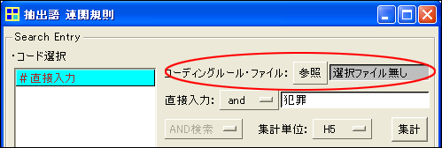
- 「文書表示」画面の修正
- 例えば「段落」単位で文書を表示している場合には、H1～H5単位に読み込まれた外部変数値の表示が不正確になっていた。この組み合わせに限らず、文書表示の単位と異なる単位に読み込まれた外部変数値の表示がおかしくなっていたのを修正。
- 文字列による検索を行った場合も、その文字列を黄色で強調するように修正。これまでは検索に用いられた抽出語だけが黄色で強調され、文字列は強調されていなかった。
- 細部の調整
[2006 01/05]
2.beta.3での変更点
- 文書検索のソート順に「tf*idf順」「tf/idf順」を追加
- コンコーダンス（KWIC）検索の結果をCSVファイルに保存する機能を追加
- 「ツール」→「SQL文入力」コマンドで、複数のSQL文を一度に入力・実行できるできるようになった
- 複数のSQL文を入力・実行する場合は、各SQL文の最後に「;」を付して、直後に2度改行してから（直後に空の行を入れてから）、次のSQL文を記述する。
- 分析対象ファイルの扱いを改善
- データ中に半角スペースが含まれていた場合、全角スペースに変換してから処理するように修正
- 「部分テキストの取り出し」コマンドのバグを修正
- 「特定のコードが与えられた文書だけを取り出す」際に、当該コードが与えられた文書群のうち、一部しか取り出されない場合がある問題を修正
- 検索結果をクリップボードにコピーする際に、エラーが出る場合がある問題を修正
- Rが出力した結果を取得できない場合があった問題を改善
- MySQLを2重・3重に起動してしまう場合がある問題を修正 [Windows版パッケージのみ]
- KH Coderを強制終了し、もう一度起動した場合等。この問題には2.b.2で対処したつもりだったが、失敗していたようなので…
- Perl 5.8 / Mac OS Xに対応 [ソースコードのみ]
- Windows版バイナリについては、未だ従来のPerl 5.6を使用
[2005 12/06]
2.beta.2での変更点
- コンコーダンス（KWIC）機能の改善
- 前後にどんな語が頻出していたかを集計するcollocation統計の追加
- 「左右（前後）に特定の語が出現していること」という条件を追加し、結果を絞り込めるようになった。
collocation統計と絞り込み機能はセットでの利用を想定： collocation統計で「直後にAという語が頻出している」と分かったら、絞り込み機能を使って直後にAという語が出現している行（コンコーダンスライン）だけを表示・確認する...といった形で
- 改行があってもそのままつなげて表示していたのを改め、改行を「（↓）」という記号で表示するようにした（ただし段落間の区切りのみ）
- コンコーダンス作成時に前後30語までしか取り出せないという制限を排除
ただし、広い範囲を確認したい場合には、各ラインをダブルクリックして文書表示Windowを開くことを推奨。コンコーダンス作成時に前後100語を取り出すといったことも可能にはなったが、実際の確認はおそらく難しいので…。
- 文書表示画面（コンコーダンス・文書検索）に、以下の情報が表示されるように改善
- 読み込んだ外部変数の値
- 現在表示している文書の詳しい位置情報
- 設定Windowでフォントの種類とサイズを変更できるようになった
- 分析対象ファイルやコーディングルール・ファイルの制限を若干緩和した
- データ中に半角カナが含まれていた場合、全角に変換してから処理することで、エラーを回避
- 文字コード・改行コードの制限をなくしたので、Windows - Linux間で同じファイルを（変換無しに）分析に使えるようになった
ただし、内部ではEUCコードに変換して処理しているので、EUCに変換できないUnicode文字の使用は不可。
- コーディング処理を（若干）効率化した
- 各Windowを開く処理を（若干）効率化した
- MySQLを2重・3重に起動してしまう場合がある問題を修正（KH Coderを強制終了し、もう一度起動した場合等） [Windows版パッケージのみ]
- Windows Vista beta 1に（たぶん）対応 [Windows版パッケージのみ]
- 統計解析とグラフィックスのための言語・環境「R」を利用して、統計計算を行う機能を追加
- これは実験的な機能追加で、この機能を今後も残すかどうかは未定
- 「R」がデフォルトのパス（C:\Program Files\R\rw2011等）にインストールされている場合のみ、KH CoderはRを見つけられる（利用できる）
- Rが利用できる場合、以下の計算がRを用いて行われる（Rが見つからなかった場合、以下の計算結果は表示されない）
- 「コーディング」→「章・節・段落ごとの集計」画面での（ピアソンの）カイ2乗検定
- 「コーディング」→「外部変数とのクロス集計」画面での（ピアソンの）カイ2乗検定
- 機能追加に伴うマニュアルの改訂： おもにコンコーダンス機能（5.2節）と文書表示画面（6.1節）についての説明を追加
[2005 10/11]
2.beta.1での変更点
- インストール・設定が簡単に（Windows版）
- MySQLやChaSenのインストール・設定が不要になった
- KH Coderの設定も、最低限必要な設定は自動化した
- WordMinerとの連携のためにコマンドを追加
- 「『文書x抽出語』表の出力」→「不定長CSV（WordMiner）」
- 「コーディング結果の出力」→「不定長CSV（WordMiner）」
- コーディング機能の改善
- 「コーディング」→「外部変数とのクロス集計」機能
- これまでは、コーディング単位と同じ単位に読み込まれた外部変数だけしか、クロス集計に用いることができなかった。この点を改善して、コーディング単位よりも上位に読み込まれた外部変数を利用できるようにした。
- エラーメッセージの修正
- コーディングルール内で、「<＊コード名>」という指定によって、存在しないコードを再利用しようとした場合の挙動を修正。これまではPerlエラーが出ていたので、適切なエラーメッセージが出るように修正した。
- その他
- プロジェクト削除時に、MySQL内の関連データを削除するように修正
- キーバインド追加
[2005 05/03]
2.alpha.6での変更点
- コーディング機能の改善
- 1つのコーディングルール・ファイルに900個までコードを記述できるようになった（以前は30個まで）
- 外部変数の扱いを改善した
- これまでは検索やコーディングを行う単位と、同じ単位に読み込んだ外部変数しか用いることができなった点を改善した。例えばH2単位に読み込んだ外部変数を、H3単位、H4単位、H5単位、段落単位、文単位での検索やコーディングに用いることができるようになった。ただし、より上位の単位（この例ではH1単位）の検索・コーディングには使用できない。
（上位見出しを用いたコーディングでは以前から同様のことが可能だった）
- 前処理機能の改善
- 前処理時に全角127文字を越える語が見つかった場合の挙動を変更
これまではMySQLエラーが出るようになっていたので、それと分かるようなエラー・メッセージが出るように修正
- データ中に半角の数字があると前処理に失敗する場合があるバグを修正
- 「HTMLからCSVに変換」コマンドの出力結果が不正になる場合があるバグを修正
[2004 12/01]
2.alpha.5での変更点
- 外部変数の読み込み機能を改善
- タブ区切りファイルの読み込みに対応
- 値の中に「,」等を含むCSVファイルの読み込みに対応
- 文書表示Windowのバグを修正
- 文書表示の際に、語順がみだれ、解読不能になってしまう場合があるバグを修正
- 外国語（英語・仏語など）のデータの分析に無理矢理対応（?）
- 半角クォートが、データ中（語の内部）に含まれているとエラーが発生する問題を解決
- 分析にあたっては参考情報をご確認下さい
[2004 07/19]
2.alpha.3での変更点
- データ出力の形式として、今までのCSVとSPSSに加えて、タブ区切りにも対応
- 品詞体系の変更
- 茶筌が「形容詞-非自立」に分類した語を、KH Coderでも「形容詞（非自立）」という独立した品詞に分類することにした。これまではKH Coder上では「形容詞」または「形容詞B」に分類していた。
- 「『抽出語x文脈ベクトル』表の出力」コマンドの挙動を変更
- これまでは小数点以下8桁にまるめて出力していたが、そのまま出力するように変更した。（最大で小数点以下15桁まで出力されるようになった）
- プロジェクトの削除に失敗する場合があるバグを修正
- 分析対象として登録したファイルの名前（フルパス）に全角文字が含まれていると、そのプロジェクトを削除できなかった。
- 「Please Wait」Windowの位置を変更した
- 完了ダイアログWindowが出ても、「Please Wait」Windowの下に隠れてしまう場合がある問題への（姑息な）対処
- 設定の初期化方法を変更
- マニュアルの改訂
- タブ区切りへの対応や品詞体系の変更に伴う微修正
- Typo修正
[2004 07/01]
2.alpha.2での変更点
バグ・フィックスのためのリリース。
- 「文書x抽出語」表の出力が不正確になる場合がある問題を修正
- MySQLのバージョンに依存する問題??? MySQL 3.23.58で正常動作するように修正
- 「HTMLからCSVに変換」コマンドの修正
- 「文単位」での出力を行うと、出力結果が不正確になってしまう問題を修正
- 前処理に失敗する場合がある問題の修正
- 分析対象ファイルに「読み取り専用」属性がついていると、2度目以降の前処理がエラーとなる問題を修正
- Excel用アドインの変更
- 「頻出150語の表を作成」時に、「ない」「ぬ」などの否定助動詞を表から省くように変更
- マニュアルの改訂
- p.9～p.11に「否定助動詞」についての記述を追加
[2004 6/14]
2.alpha.1での変更点
ほぼ完全なリライト。
- コーディング機能の改善
- 抽出語の活用形を指定できるように
- 「語Aの未然形が含まれること」といった指定が可能になった。
- 抽出語のフレーズ指定が可能に
- 「語Aと語Bが連続して出現していること」といった条件指定が可能になった。
- 「先頭から数えて何番目の文書か」を基準にしたコーディングが可能に
- 「統計ソフトで行ったクラスター分析の結果、？番目の文書が特徴的だとわかった」といった場合に、容易に検索（コーディング）できる。
- 抽出語ではなく文字列による条件指定も可能に
- 外部変数の使い勝手を改善
- 数値型だけでなく、文字列型変数を読み込み可能に
- 前処理を再度行った場合も、変数が削除されないように改善
- 上位見出しだけでなく同位の見出しを使ったコーディングが可能に
- 集計機能の改善
- 外部変数とのクロス集計が可能に
- 例えば、データが質問紙調査の自由回答の場合、性別ごと、学歴ごとといった集計が可能になった。以前は、この集計を行うために別途統計ソフトウェアを利用する必要があった。
- 各種ツールの追加や改善
- コンコーダンス表示ツールを追加
- 抽出された語が、元のデータ中でいかに用いられていたのかという文脈を確認したい場合には、文書検索ツールよりも便利。
- 語の抽出結果を確認（検索）するツールを追加
- 「この文・フレーズがどう分割されて、語が取り出されたのか？」を容易に調べられるようになった。
- 「文脈ベクトル」を出力する機能を追加
- 語のクラスター分析や、語の散布図を作成する際には、「文書x抽出語」表を使うよりも、良い結果が得られることがある。
- SQL文入力による自由な検索を行うツールを追加
- 簡単なSQL文を入力すれば、もともと用意されている検索だけでなく、分析者の思いつく限り、ありとあらゆる検索・計算を行うことができる。
- 抽出語検索ツールを改善
- 部分・完全・前方・後方一致検索が可能に
- 語の活用形ごとの出現数を表示可能に
- コンコーダンス表示ツールとの接続
- 文書検索ツールを改善
- 検索結果を200づつに区切って表示するように
- コーディングルールを直接画面に打ち込めるように
- コーディングルール・ファイルから読み込んだコードに、画面上で条件を付け加えて検索できるように
- 文書表示時の語の強調（色づけ）が正確になった
- 抽出語の連関規則ツールを改善
- これまでの確立差・確立比に加えて、JaccardおよびOchiaiの類似性速度が利用可能になった。
- 前処理についての改善
- 前処理にかかる時間が大幅に減少
- 無視したい語や、無視したい品詞の指定がより容易に
- 品詞体系そのものを容易に変更できるように
- 前処理の完了をメールで通知できるように
- 全般的な使い勝手の改善
- 各Windowの位置とサイズを記憶するようになった
- 全てのWindowに共通のキー・バインドを追加
- ESCキーでWindowを閉じる
- 左AltキーでメインWindowをアクティブに
- 前処理時や各種ツールの使用時に、いちいち「集計単位」を指定する必要が無くなった
- プロジェクトごとに、最後に利用した検索やコーディングの単位と、コーディングルール・ファイルを記憶するようになった
- 他のアプリケーション（SPSSやWebブラウザ）への依存が減少した
- 再起動しなくても、複数のプロジェクトを切り替えられるように
- WindowsだけでなくLinux上で利用できるように
- ソースコードを大幅に整理
- RDBMS（MySQL）を採用
[2004 4/30]
1.30での変更点
- Excel用アドインによる機能拡張
- 「デーファイルの始めから数えて??番目の記事（文書）を検索・表示」する機能を追加
- マニュアルに上記2項目の説明を加筆
- その他細々としたバグの修正
[2002 12/3]
1.21での変更点
- データ構造によっては希にコーディング結果の表示・出力が不正確になるバグを修正
- 「その他」品詞オプション選択時のバグを修正
- 「HTMLからCSVに変換」コマンド使用時に、最後の文書が出力されないバグを修正
[2002 12/3]
1.20での変更点
- これまで助詞・助動詞の類は全て無視していたが、「ない」や「ぬ」など否定を表す助動詞を「否定」という品詞名で抽出するように変更
- これまで抽出せずに無視していた助詞・助動詞なども全て抽出するオプションを追加
（「ファイル」 -> 「設定」 -> 「『その他』品詞の抽出」）
- 文書の類似度を計算するときなどで、「わずかたりとも情報量を減少させたくない」という（いくぶん特殊な）場合の使用を想定
- 「強制抽出・強調マーキング」コマンドの挙動を変更し、データファイルに直接マーキングを行わないようにした。コマンド名も「強制抽出・強調する語を指定」に変更。
- 分析を進めつつデータファイルを自分で編集するような場合、データファイルに直接マーキングを行うのは危険な場合があるため
- 以上の変更にそって、マニュアルを改訂
- その他細々としたバグの修正
[2002 9/17]
1.10での変更点
- 文書の長さにもとづくコーディングが可能になった
- 例えば自由回答データの場合、次のようなコーディング・ルールを書くことで、
( ホームページ or メール ) and ( lw == 1 )
「ホームページ」または「メール」という１語だけからなる回答をコーディングできる
- 語数を指定する場合には「lw」を、文字数を指定する場合には「lc」を用いる
- コーディング・ルール記述時に、半角スペースの代わりに全角スペースを用いることができるようになった
- ただし、and, &, or, |, not, !, +,,,などなどの演算子は相変わらず半角で記述する必要がある
[2002 6/16]
1.01での変更点
- 「章・節・段落ごとの集計」コマンドの出力結果が不正確になる場合がある問題を修正
[2002 5/7]
1.00での変更点
- 「複合名詞を用いる」オプションが選択された際の挙動を変更
- 以前は「デイリー・メール」が「デイリー」、「・」、「メール」の3語となっていたのが、1語として抽出されるようになった。これは「記号-一般」も1つの語として抽出されるように変更したことによる。
- その他細々としたバグ修正
このバージョンを筆者は修士論文で使用
[2002 2/18]
Beta 4.3での変更点
- PCの日付が12月に入るといくつかのコマンドが実行不能になるというバグを修正（処理時間計算ルーチンのバグ・・・。）
- その他細々としたバグ修正
[2001 12/5]
Beta 4.2での変更点
- マニュアルに新しい機能の説明を追加（マニュアルはAlpha4以来更新されていなかった。。。）
- 微細なインターフェイスの変更
[2001 11/19]
Beta 4.1での変更点
- 文書検索時に「AND検索」を指定してもOr検索が行われてしまうバグを修正。このバグはおそらくBeta4かBeta3で新たに混入した模様。
- その他の細々としたバグ修正。
[2001 11/2]
Beta 4での変更点
- 「外部変数」->「CSVファイルから読み込み」コマンドを新設
- このコマンドを用いれば、(i)質問紙調査の自由回答項目の場合、例えば男性の回答のなかに頻出する語を調べたりといったこともできるし、「40代の男性の回答の中に単語Aが出現していればコードαを与える」といったコーディングルールが作成できる。
あるいは、(ii)「単純集計の出力」を利用してSPSS上でクラスター分析を行い、各ケースの所属クラスタを保存し、変数としてKH Coderに読み込むこともできる。これによってKH Coder上で、各クラスタに分類された文書内容を確認したり、各クラスタに特に高い確率で出現している語を調べたりといったことができる。文書の「半自動」分類が可能になる、かな。
このコマンドで読み込んだ変数はコーディングルール中だけでなく、文書検索／抽出語連関規則Windowの単語入力部分でも次のように利用できる。
<>変数名-->値 ex. <>性別-->男性
（値は実際の値でも値ラベルでもどちらを指定しても良いが、コーディングルールの可読性という点からはラベルを用いた方が好ましい）
- 「外部変数」->「上位見出しを変数に変換」コマンドを新設
- マニュアルで例示した新聞記事の場合、このコマンドによって変数を作成すれば容易に「96年の記事で、特定の語を含むもの」といったコーディングルールの作成、検索が行える。
- 「外部変数」->「変数リスト・値ラベル」コマンドを新設
- 個のコマンドは、読み込まれている変数を確認したり、値ラベルを付与したりといった用途に用いる。
- コーディングルール記述時に、既に同じファイルの上の方で定義したルールを再利用できるようになった。<>（山カッコ）で括って指定すれば良い。
例．
＊教育関係
学校 or 先生 or 教師 or ....(中略)...
＊教育の場での交流
<＊教育関係> and 交流
- 文書検索時の全文表示Windowの機能を強化。（検索語などのカラーリング）
- 細々としたバグ修正
[2001 10/22]
Beta 3での変更点
- コーディングルール内や、文書検索Windowの単語入力部分において、品詞の指定が可能になった
これまで単語だけを記述していた部分に、「単語-->品詞」のように記述すれば品詞の指定が行える
- 人名の「山田」を指定したい場合には「山田-->人名」と書けば良いし、地名の山田を指定したい場合には「山田-->地名」と書けばよい
場合によっては、こういった区別を行えた方が便利であろう
ただし、ChaSen/JUMANがどの程度正確に地名と人名を区別しているかと言うことに関しては、確認の必要があるだろう
- 細々としたバグ修正
[2001 10/10]
Beta 2での変更点
- コーディングルール作成時に、次の演算子が新たに使用可能になった
「+, -, *, /, <, <=, >, >= , ==」
これらの演算子を使えば「単語がいくつ（以上／以下）出現しているか」によってコードを与えたり与えなかったりすることができる。
- 例えば、「メール」、「電子メール」、「Ｅメール」といった単語が合計2個未満しか出現していないこと、という条件は次のように記述できる。もちろんカッコで括れば、And（&）Or（|）演算子で他の条件と組み合わせることができる。
- コーディング関係のプログラムを変更した副産物として、「&」のかわりに「and」、「|」のかわりに「or」、「!」のかわりに「not」を使えるようになった。「&!」は「and not」、「|!」は「or not」となる。
- 「&, |」といった記号を使った方がコーディングルールがシンプルになる反面、「and, or」を使った方がコーディングルールの可読性が増すだろう。好きな方を用いていただきたい。
- もう一つの副産物として、コーディングルールの条件記述部分に、好きなだけ改行やタブやスペースを入れられるになった。これで複雑なコーディングルールもある程度分かりやすく記述できる、はず。
| 例えば、こう書くよりも、
電子掲示板 | 掲示板 | ( ＢＢＳ &! (( Ｂｉｇ & Ｂｒｏｔｈｅｒｓ & ａｎｄ & Ｓｉｓｔｅｒｓ ) | ( ビッグ & ( ブラザー | ブラザース ) & アンド & シスターズ ) | ( アルミ & ホイール ) | ( 英国 | 番組 | 放映 ) | ＢｉｇＢｒｏｔｈｅｒｓａｎｄＳｉｓｔｅｒｓ ) )
下のように書いた方が、はるかに読みやすい。
電子掲示板
| 掲示板
| ( ＢＢＳ
&! (
( Ｂｉｇ & Ｂｒｏｔｈｅｒｓ & ａｎｄ & Ｓｉｓｔｅｒｓ )
| ( ビッグ & ( ブラザー | ブラザース ) & アンド & シスターズ )
| ( アルミ & ホイール )
| ( 英国 & 番組 & 放映 )
| ＢｉｇＢｒｏｔｈｅｒｓａｎｄＳｉｓｔｅｒｓ
)
)
（上の例ではタブの変わりに全角スペースを使っているが、全角スペースは利用できない）
|
ごく稀にだが、単語の数をチェックしたい場合もあった。また、あまりに読みにくいコーディングルールでは、自分が過去に正しく記述したものを、読み誤って「算出された数字間違ってたかも?!?!」と冷や汗を書いてしまう。いざ自分で分析を始めると、いろいろ手直ししたくなるのだが、、、いつまでもプログラミングに時間を割いている場合では・・・。
[2001 10/09]
Beta 1での変更点
- 前処理（マーキング、形態素解析、必要な単位での集計）を一気に行うメニュー・コマンドを作成
（分析時に強制抽出文字列を追加したくなった場合などは、一気に前処理を行えて便利かも）
- 検索にヒットした文書全体を表示する「全文表示Window」の機能を向上
- 「前の検索結果」、「次の検索結果」ボタンを追加
- 表示されている文書に与えられているコードの一覧を最下部に表示
（現在開いているコーディングルール・ファイルがあれば）
- ドラッグ＆ドロップに対応
- マーキング対象語の指定部分などにテキストファイルをドラッグすれば、ファイルの内容が挿入されるようになった。
（いったんメモ帳などで開いて、コピー＆ペーストする必要がなくなった）
- ファイル名入力部分にエキスプローラーからファイルをドラッグドロップ可能に
（ファイルの位置によっては「参照」ボタンよりも楽なはず）
- 検索Windowなどのコード選択部分にコーディング・ルールファイルをドラッグ可能に
（ファイルの位置によっては「開く」ボタンよりも楽なはず）
- 「再起動」コマンドを新たに作成
- ChasenだけでなくJUMANにも対応
- その他細々とした修正・変更
このバージョンからホームページでの一般公開を開始
[2001 10/03 ]
Alpha 4での変更点
- 文書検索Windowの外見を変更
- 検索結果のリストには各文書の最初の30～40文字だけを表示
- 各検索結果をダブルクリックすると文書の全文を表示する
- 全文表示Windowでは、直前・直後の文書の表示も可能（文脈を確認したいときに便利かも）
- 全文表示Windowには上位見出しの情報も青字で表示される
Alpha 3.9での変更点
- 「! 単語」のように、「単語（群）が存在しないこと」、という条件だけからなるコーディング・ルールが、正しく働かない場合がある問題をフィックス 。
- この問題はAlpha 3でフィックスされたはずだったが、「抽出語連関規則」コマンドの利用時に、未だに発生していた
- 分析対象ファイルの名前が全角文字を含んでいたり、フォルダ名（パス）に全角文字が含まれていると、SPSSシンタックス・ファイルが正常に出力できない問題をフィックス。
- この問題は「抽出語 出現回数 分布」および「抽出語 文書数 分布」コマンドで発生していた
- 「強制抽出・強調マーク」および「形態素解析＋」コマンドの実行時に、以前にKH Coderが生成したファイル（coder_dataフォルダ内の生成ファイル全て＋"*_lt.csv"ファイル）を削除するように変更
- 「強制抽出・強調マーク」を行うと分析対象ファイ
- ルが変更される。にもかかわらず、それ以前に生成された、集計ファイルなどを用いて、コーディング・その他の処理が可能であった。そこで、以前の出力ファイルを削除することで、形態素解析や集計を必ず再実行しなければならないようにした。
- 「形態素解析＋」に関しても同様に、「複合名詞を使う」オプションが変更された場合を想定し、「形態素解析＋」を再実行した場合には、集計も再実行しなければコーディング・その他の処理ができないようにした。
- 指定された集計単位でコーディング結果を集計する「コーディング >> 章・節・段落ごとの集計」コマンドを追加
- これによって、新聞記事ならば年ごと、本ならば章ごと、などなどの単位で各コードの増減を一発で表示できるようになった
- 「ツール」メニューの構成を変更
- 「部分テキストの抽出」コマンドにオプションを追加
- 「HTMLからCSVに変換」および「部分テキストの抽出」コマンドの解説をマニュアルに追加
- なお、これら２つのコマンドは「ツール」メニューに移動した
- マニュアルにはその他にも細々とした変更を追加
- ただし、「コーディング >> 章・節・段落ごとの集計」コマンドの解説はまだ書いていない
Alpha 3.6での変更点
- コーディングの結果が実際よりも１大きく報告される場合がある問題をフィックス
- この問題のために、「部分テキストの抽出」コマンド使用時にも、本来は抽出されるべきではない文書が１つ余分に抽出される場合があった。
- 「文書検索」、「部分テキストの抽出」コマンド使用時に、元のデータに存在した改行が無くなってしまう場合がある問題をフィックス
- この問題はデータ中にH1～H5タグによって括られた見出し文が連続していた場合に発生することがあった。
例えば、H3単位での検索を行う場合を考えると、H4見出し文の直後にH5見出し文が存在するような場合、この見出し文の間にあった改行が失われて表示・出力されてしまっていた。
- その他の細かいバグ・フィックス
Alpha 3.5での変更点
- 「プロジェクト」メニューに以下のコマンドを追加
- 「テキストファイルの変形」 => 「HTMLからCSVに変換」
- 説明： このコマンドによって作成されたCSVファイルをエクセルから開けば、容易にトレンドサーチにデータを投入できる。
- 「テキストファイルの変形」 => 「部分テキストの抽出」
- 説明： 見出しだけに特に注目したい、または、特定のコードが与えられた文書に特に注目したい。そんな場合に、そういった条件に合う部分だけを新しいファイルに抽出するためのコマンドである。
（こういった注目を行うためのより特殊なコマンドを作った方が分析は楽かもしれないが、、、別のファイルに分けてしまう方がプログラミングは楽なので・・・。それにこの方が分かりやすいかもしれない・・・。）
- その他の細かい変更数点
注意： 今回新しく加えたコマンドは、まだマニュアルに説明が無い。次回のリリースでマニュアルも更新の予定。
Alpha3での変更点
- 「連関規則」、「文書検索」Windowを同時に開くと、メモリ内での干渉が発生し、コーディングルールを用いた検索の結果が不正確になる場合がある問題をフィックス
- この２つが互いに干渉するだけではなく、「コード集計」などを行っても、この２つが影響を受けて、検索結果が不正確になることがあった。
- なお「コード集計」、「コーディング結果の出力」の２つに関しては、正確に行われていた。「連関規則」や「文書検索」に悪影響を与えてはいたのだが。
（＊これらの問題はフィックス済み）
- コーディング・ルールの条件記述部分に連続する半角スペースが存在すると、正確なコーディングができない場合がある問題をフィックス
- 「! 単語」のように、「単語（群）が存在しないこと」、という条件だけからなるコーディング・ルールが、正しく働かない場合がある問題をフィックス
- コーディング・ルールの条件記述部分で、半角スペースが抜けている（と推測される）場合、警告メッセージを表示するように変更
[2001 08/01]
Alpha2での変更点
- 単純集計出力時に最大文書数を指定すると出力が壊れるバグを修正
- 単純集計出力に各文書の文字数（全角換算）を表す変数を追加
- 単語数の変数名 -> length_w（今まではlength）
- 文字数の変数名 -> length_c
- 同時にHTMLタグはカウントしないように変更（今までは数えていた）
- 出現数が0のコードが2つ以上あると「コード集計」時に0による除算が行われてエラーが発生する問題をフィックス
- プロジェクトの「説明（メモ）」入力部分で、左右カーソル、バックスペース、デリート・キーを押すと微妙に文字化けする問題をフィックス
- 「ヘルプ」メニューに項目を追加
- 「KH Coderについて」 -> バージョン・著作権などに関する情報の表示
- 「最新情報」 -> KH Coderのホームページ（このページ）を表示
- 同じツールWindowを2つ以上同時に開くことができないように変更。
- 今までは、2つ同時に開けるが、いざ検索・計算するとエラーが発生していた。
ただし、抽出語検索と文書検索のように種類の違うツールWindowに関しては 今まで通り、同時に開いて操作することができる
- ファイル名をgui.exeからkh_coder.exeに変更 （gui.exeはもはや不要なので削除可）
- 外見上の修正
- 形態素解析＋、文単位の集計を効率化（最大約10%高速化）
[2001 07/30]
|

{kind=link}
{kind=link}
{kind=link}
{kind=link}
{kind=link}
{kind=link}
{kind=link}
{kind=link}
{kind=link}
{kind=link}
{kind=link}
{kind=link}
{kind=link}
{kind=link}
{kind=link}
{kind=link}
{kind=link}
{kind=link}
{kind=link}